Modélisation du procédé d'hydrolyse en continu
Le procédé proposé à l'étude est le premier procédé d'hydrolyse thermique des boues censé fonctionner en continu. Le débit et la siccité de la boue à traiter pouvant varier et être ajusté en fonctionnement continu. La figure 2.1 représente l'ensemble du procédé. Est représenté l'arrivée des boues déshydratées, le point d'injection vapeur, le réacteur, une série de deux échangeurs, une injection d'eau de dilution.

Le réacteur est constitué de deux parties : une colonne verticale servant pour l'injection et la condensation de la vapeur ainsi qu'une partie horizontale pour assurer le temps de réaction. Ces deux parties ont des contraintes spécifiques et seront abordées individuellement.
Le premier échangeur sert à récupérer de l'énergie pour préchauffer l'eau d'alimentation de la chaudière vapeur alimentant le système. Le second échangeur sert à refroidir les boues afin d'atteindre la température désirée dans le digesteur. L'eau de dilution est utilisée pour abaisser la température des boues, et donc d'optimiser le dimensionnement du second échangeur, et pour contrôler et ajuster la concentration en matière en suspension des boues entrant dans le digesteur à 100–120 g/l. Pour rappel, au-delà de cette valeur surgissent des problèmes de brassage du digesteur dus à une viscosité trop importante ainsi que des concentrations en ammoniaque pouvant inhiber la phase méthanogène.
L'injection de vapeur dans la colonne de condensation est censée être réalisée par une canne d'injection munie de multiples trous. Cependant, de nombreuses incertitudes persistent sur la géométrie de cette canne à savoir :
- La géométrie de la canne d'injection est-elle optimum ?
- Cette géométrie permet-elle de condenser la vapeur rapidement dans le système ?
- Permettra-t-elle d'atteindre une parfaite homogénéité des températures dans le réacteur ? Tout gradient de température entre la partie haute et basse du réacteur pouvant provoquer des contraintes mécaniques dues à la différence de dilatation du réacteur. Toute inhomogénéité de température pouvant induire un traitement imparfait de la boue.
- Est-il possible d'envisager un autre design de canne d'injection ?
- Ce nouveau design pourrait-il être extrapolé sur une taille de réacteur plus importante ?
De plus, au milieu de la partie verticale une restriction a été mise en place de façon arbitraire afin de favoriser la condensation de la vapeur. En partie haute, une spirale est censée être installée pour parfaire la condensation de la vapeur. Le réacteur horizontal a été incliné de 5 % pour améliorer l'homogénéité des températures. Ces éléments font partie du brevet initial mais ne reposent sur aucun fondement scientifique [Hojsgaard, 2011]. Certains de ces points seront évalués dans ce travail.
Pour des raisons de coûts et de délais, il a été décidé de mettre au point un modèle numérique permettant de simuler les phénomènes attendus d'évapo-condensation plutôt que de procéder à des plans d'expérience.
Cette approche impose de comprendre les interactions à modéliser et de caler le modèle à la réalité. La construction d'une unité pré-industrielle est prévue dans le but d'accompagner la phase de simulation afin de pouvoir confirmer les résultats des simulations puis, si une géométrie apparaît satisfaisante, de la tester et de valider l'efficacité du transfert boue vapeur.
2.1 Approche des phénomènes à modéliser
2.1.1 Modélisation de la colonne d'injection de vapeur
La figure 2.2 représente schématiquement la colonne d'injection de vapeur saturée étudiée et les interactions entre les phases. De la vapeur saturée est injectée au centre de la partie verticale via une canne d'injection. La vapeur est ainsi mise en contact direct avec la boue.
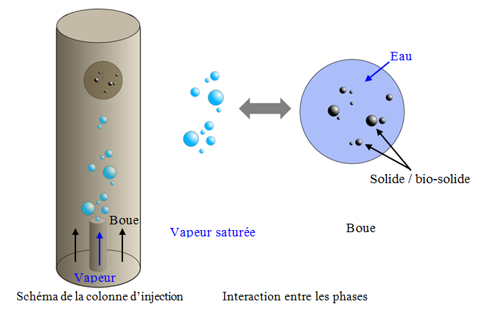
Les ordres de grandeur des conditions opératoires du système à étudier figurent dans le tableau 2.1.
| Vitesse en entrée (m s⁻¹) | Pression (bar) | Température en entrée (°C) | Concentration matière solide en suspension (g/L) | |
|---|---|---|---|---|
| Vapeur saturée | 10 à 100 | 5 à 16 | Tsat | – |
| Boue | 10⁻³ à 10⁻¹ | 8 à 14 | 25 | 120 à 250 |
La pression appliquée sur la boue dans le système doit pouvoir varier de 5 à 14 bar qui correspondent à des températures d'hydrolyse de 150 et 195 °C.
La vitesse d'éjection de la vapeur au niveau des trous de la canne d'injection servant de modèle de base est considérée comme allant de 10 à 40 m·s⁻¹. La pression vapeur varie de 8 à 14 bar. Une partie de cette pression vapeur étant nécessaire pour vaincre les pertes de charge dues à la boue et la pression résiduelle servant à maintenir le réacteur sous pression de façon à ce que le fluide traité ne se vaporise pas.
Comme illustré à la figure 2.2, le système à modéliser est un écoulement multiphasique sujet à des phénomènes d'évaporation-condensation. Les phases en présence sont :
- De la vapeur d'eau saturée
- De la boue de station d'épuration (mélange d'eau et de bio-solides)
Les phénomènes physiques à prendre en compte sont :
- Les équations régissant le mouvement de chacune des phases : boue et vapeur d'eau saturée,
- Les modèles de turbulence pour chacune des phases,
- Les équations de transport et transfert d'énergie (incluant le transfert d'énergie dû aux phénomènes d'évaporation-condensation),
- Le modèle de transfert de matière dû à l'évaporation-condensation,
- La détermination de l'aire interfaciale entre la boue et la vapeur d'eau,
- La dépendance des propriétés physiques des phases en fonction de la pression et de la température,
- La rhéologie des boues et notamment son évolution due aux phénomènes d'évaporation-condensation.
2.1.2 Modélisation du réacteur horizontal
La figure 2.3 représente schématiquement le réacteur de lyse thermique étudié.

Les ordres de grandeur des conditions opératoires du système à étudier figurent dans le tableau 2.2. À ce niveau on considérera que la vapeur est parfaitement condensée. La boue est considérée comme ayant une température située entre 150 et 170 °C. Le réacteur est censé être maintenu à une pression de 9 à 10 bar.
| Vitesse en entrée (m s⁻¹) | Pression (bar) | Température en entrée (°C) | |
|---|---|---|---|
| Boue | 5×10⁻³ à 10⁻¹ | 9 à 10 | 150 à 170 |
2.1.3 Méthodologies existantes des phénomènes en présence
Les phénomènes en jeu dans la colonne du procédé étudié sont complexes (injection de vapeur à hautes vitesses dans de la boue très concentrée, phénomènes d'évaporation-condensation). Afin de développer une approche de modélisation de la colonne d'injection du procédé il s'est avéré nécessaire de réaliser :
- Une étude bibliographique sur la modélisation les phénomènes d'évaporation-condensation,
- Une méthodologie élaborée sur base du retour des experts identifiés lors de l'étude bibliographique pour modéliser les phénomènes en jeu dans la colonne à l'aide du code numérique de mécanique des fluides ANSYS-Fluent.
Dans la suite de cette partie sont présentés les différents phénomènes physiques intervenant dans la colonne et le réacteur et comment ils sont intégrés dans les modèles utilisés dans cette étude (modèle colonne et modèle réacteur).
2.1.3.1 Choix du modèle diphasique
Il ressort de l'état de l'art que :
- L'approche diphasique Euler-Euler est relativement courante [LeMoullec, 2008 ; Olmos, 2003 ; Wang, 2009 ; Pfleger, 2001].
- Quelques études d'écoulement en tri-phasique commencent à émerger [Wang, 2010 ; Wang, 2009].
- Les problèmes tri-phasiques (complexes) peuvent être simplifiés à d'autres niveaux de la physique : par exemple des écoulements turbulents en 2D au lieu de 3D [Wang, 2009].
- En revanche, l'approche diphasique avec prise en compte des échanges thermiques et changements de phase est beaucoup plus rare (pas de tri-phasique) [Lee, 1979].
- Tous ces écoulements sont résolus dans des géométries 3D « plutôt simples » (tubes, bacs, fluides à contre-courants) [LeMoullec, 2010 ; Millies, 1999 ; Olmos, 2003].
- Pour les géométries complexes en mouvement (agitations et pales), la physique est simplifiée le plus possible, en gardant les aspects de turbulences (qui contribuent au mélange) : écoulements turbulents monophasiques et on commence à voir du mélange en diphasique [Wang, 2010].
L'article de Jamaleddine traite de l'évaporation de vapeur d'eau depuis la surface des particules [Jamaleddine, 2011]. L'évaporation (transferts de masse et de chaleur) est traitée par des lois sur des nombres adimensionnels de Nusselt, Sherwood, coefficients de transferts et un terme de transfert de masse. Le modèle de turbulence utilisé est un modèle k-ε standard.
Cet article est une référence. L'étude est structurée sous Fluent (modèles, équations et propriétés, maillage, expérience) et concerne l'évaporation de boue solide.
Dans ses articles, LeMoullec développe un modèle diphasique gaz-liquide dans un réacteur de boues activées, prenant en compte l'hydrodynamique, les transferts de masse et les réactions biologiques. Il base son approche diphasique sur un modèle Euler-Euler en incorporant un coefficient de traînée adapté pour des bulles dont il a déterminé la taille expérimentalement [LeMoullec, 2008, 2010, 2011].
Dans ses articles Wang développe un modèle triphasique gaz-liquide-solide dans un bioréacteur, couplant l'hydrodynamique et les réactions biologiques. Leur système est traité en 2D mais son approche est tri-phasique. Il utilise une approche Euler-Euler et au niveau de la turbulence un modèle k-ε standard avec ajout de termes supplémentaires prenant en compte la turbulence générée au niveau de l'aire interfaciale [Wang, 2005 ; Wang, 2010].
Il ressort de l'état de l'art sur l'aspect diphasique du problème que le modèle Euler-Euler est préconisé par les experts identifiés dans la littérature [LeMoullec, 2011, 2010, 2008 ; Olmos, 2003 ; Wang, 2009, 2010 ; Lee, 1979].
2.1.3.2 Choix du modèle de turbulence
Il ressort de l'état de l'art des modèles de turbulence étudiés que :
- La turbulence découle essentiellement des aspects diphasiques.
- Un terme est ajouté pour affiner le modèle k-ε (pour prendre en compte de l'effet de bullage).
Les auteurs identifiés dans l'approche diphasique : Jamaleddine, LeMoullec et Wang utilisent un modèle de turbulence de type k-ε. Son utilisation est recommandée pour simplifier au mieux le problème. LeMoullec teste également un modèle de type Reynolds Stress Model (RSM) par la suite pour une meilleure prise en compte de la turbulence. D'après LeMoullec ce modèle est plus compliqué à faire converger et demande plus de ressources de calculs [LeMoullec, 2011].
Dans leurs articles, LeMoullec et Wang utilisent un terme ajouté pour affiner le modèle k-ε à cause de la création de bulles (l'injection de gaz crée de l'énergie turbulente). Si le gaz a une vitesse forte, il impacte fortement la turbulence [LeMoullec, 2010 ; Wang, 2010].
Il ressort de l'état de l'art sur les modèles de turbulence du problème que le modèle k-ε est préconisé par la littérature dans une première approche.
2.1.3.3 Détermination de l'aire interfaciale
Les conclusions qui ressortent de l'état de l'art sur l'aire interfaciale sont que :
- L'aire interfaciale (angle de contact et forme de la bulle) est un problème très spécifique, essentiellement regardé à l'échelle microscopique. Elle est étudiée par les experts à l'échelle de la bulle ce qui n'est pas l'échelle macroscopique qui concerne cette étude.
- D'une façon générale, les aspects microscopiques (aire interfaciale, point triple, angle de contact) sont très peu traités dans ces études. Les aspects microscopiques ont été absorbés dans des modèles macroscopiques déjà existants qui sont utilisés tels quels.
Dans leur article, Millies et Mewes utilisent une équation unique de transport de l'aire interfaciale issue d'un bilan de population prenant en compte les effets de coalescence et de brisure des bulles [Millies, 1999].
LeMoullec utilise dans sa simulation une taille et une forme de bulle mesurées. Dans les perspectives de cet article apparaît la nécessité de prendre précisément en compte l'aire interfaciale en considérant une distribution de taille de bulles et non plus seulement une seule taille de bulle [LeMoullec, 2008].
Il est nécessaire de connaître précisément l'aire interfaciale entre les deux phases puisqu'elle intervient directement dans les échanges (matière et énergie) entre les deux phases. La forme de l'interface des « bulles » intervient aussi dans le calcul des forces de traînée et donc les échanges de quantité de mouvement entre les phases.
Il ressort de l'état de l'art sur l'aire interfaciale qu'une taille de bulle unique dont on connaît la taille et la forme (idéalement que l'on puisse mesurer) peut être utilisée dans une première approche. Cependant, pour une prise en compte précise de l'aire interfaciale, il est nécessaire de recourir à une distribution de tailles de bulle et son comportement dans le système.
Dans la modélisation de la colonne, plutôt que de simuler des poches de vapeur, il a été décidé dans une première approche d'opter pour une représentation de la phase vapeur par une distribution mono-dispersée de taille de bulles de vapeur (une unique taille de bulles). Ce diamètre de bulles a été choisi arbitrairement : de la même dimension qu'un trou du système d'injection de vapeur. La figure 2.4 représente schématiquement ces deux approches, à savoir un régime d'écoulement avec des poches de vapeur et un régime d'écoulement mono-dispersé de bulles de vapeur.

Par cette simplification, on effectue une erreur sur l'aire interfaciale. Cette erreur est croissante à mesure que le régime d'écoulement réel s'éloigne du cas simplifié de la distribution mono-disperse de tailles de bulles.
2.1.3.4 Modèle de transfert de matière dû à l'évaporation-condensation
Il ressort de l'état de l'art que l'évaporation et la condensation ne sont pas traitées simultanément, même en monophasique, encore moins en diphasique liquide-gaz.
Globalement, les auteurs utilisent l'équation de Hertz-Knudsen. Ytrehus montre dans son article [Ytrehus, 1996] que :
- L'évaporation-condensation est un phénomène microscopique bien décrit par la cinétique des gaz.
- Le modèle de Schrage-Hertz-Knudsen est un modèle macroscopique simplifié qui contient nécessairement des approximations et un paramétrage.
- L'utilisation la plus fréquente de modèles d'évaporation concerne les problèmes de séchage de boue.
L'article de Jamaleddine traite de l'évaporation de vapeur d'eau depuis la surface des particules. L'évaporation (transferts de masse et de chaleur) est traitée par des lois sur des nombres adimensionnés (Nusselt, Sherwood, coefficients de transferts) et un terme de transfert de masse proche (mais différent) de l'équation de Hertz-Knudsen [Jamaleddine, 2011].
Les phénomènes physiques impliquant / produisant un transfert de matière entre la phase liquide et la phase vapeur se déroulent dans une zone au voisinage immédiat de l'interface. Dans cette région, appelée couche de Knudsen, la phase vapeur est dans un état thermodynamique hors d'équilibre [Knudsen, 1915].
Pour déterminer le flux net d'évaporation-condensation, il est nécessaire d'avoir recours à la thermodynamique statistique. Cette approche cinétique permet via l'équation de Boltzmann d'obtenir la formule (2.1) — dite équation de Hertz-Knudsen-Schrage — décrivant le flux net d'évaporation-condensation dans la couche de Knudsen [Wang, 2005] :
(2.1)
ṁnet = [2 / (2 − kc)] × [M / (2πR)]1/2 × { kc × Pv / Tv1/2 − kE × Pl / Tl1/2 }
Les définitions et les unités des symboles apparaissant dans l'équation (2.1) sont indiquées dans le tableau 2.3 :
| Symbole | Définition | Unité |
|---|---|---|
| κC | Coefficient de condensation | — |
| κE | Coefficient d'évaporation | — |
| ṁnet | Flux massique net d'évaporation-condensation | kg·m⁻²·s⁻¹ |
| M | Masse molaire | kg·mol⁻¹ |
| p | Pression | Pa |
| T | Température | K |
| R | Constante universelle des gaz parfaits | J·mol⁻¹·K⁻¹ |
| l / v | Phase liquide / phase vapeur | — |
Le coefficient de condensation kc de l'équation (2.1) est défini de la façon suivante :
(2.2)
kc = nombre de molécules absorbées en phase liquide / nombre de molécules absorbées en phase gazeuse
Comme schématisé par la figure 2.5, les molécules de vapeur impactant l'interface peuvent être réfléchies, remplacées par une molécule d'eau de l'interface ou bien être absorbées.

De la même façon, on définit le coefficient d'évaporation par :
(2.3)
kE = nombre de molécules transférées à la phase gazeuse / nombre de molécules émises de la phase liquide
Comme schématisé par la figure 2.6, les molécules d'eau liquide de l'interface sont émises et peuvent :
- Être réfléchies par des molécules d'eau de la phase vapeur et réintégrer l'interface,
- Être remplacées par une molécule d'eau de la phase vapeur à l'interface,
- Être transférées dans la phase vapeur.

Pour une interface en équilibre, ṁnet = 0, puisque le nombre de molécules évaporées est égal au nombre de molécules condensées (kE = kc). Lorsque l'interface est dans un état hors d'équilibre, cette identité n'est plus forcément vérifiée.
La détermination du flux net (équation 2.1) nécessite la connaissance des températures et pressions des deux phases au voisinage immédiat de l'interface (couche de Knudsen) et la connaissance des coefficients de condensation et d'évaporation. Ces derniers peuvent être déterminés par des calculs de dynamique moléculaire ou expérimentalement.
On peut obtenir une formulation simplifiée de l'expression du flux massique net de l'équation (2.1). Le flux massique net de l'équation (2.1) peut être scindé en deux termes, le premier représentant le transfert par évaporation et le second le transfert par condensation.
Le terme source de transfert de matière par évaporation (kg·m⁻³·s⁻¹) s'écrit finalement :
(2.4)
Γl→v = ṁl→v × Ai/Vcell = coeff × [ αv ρv (T* − Tsat) / Tsat ]
avec : coeff = [2K/(2−K)] × (6/d) × [M/(2πRTsat)]1/2 × L × [ρvρl/(ρl−ρv)]
(2.5)
coeff = [2K/(2−K)] × (6/d) × [M/(2πRTsat)]1/2 × L × [ρvρl/(ρl−ρv)]
Un terme source de transfert de matière par condensation (kg·m⁻³·s⁻¹) s'écrit à l'aide d'une expression similaire à celle de l'équation (2.4).
Sous le logiciel Fluent ce coefficient est un paramètre constant à définir lors de la mise en place du calcul. Des valeurs différentes peuvent être choisies pour le terme exprimé par l'équation (2.5) pour le transfert de matière par évaporation et par condensation.
La valeur par défaut de ces coefficients d'évaporation et de condensation sous Fluent est fixée à 0,1. Cette valeur est identique à celle utilisée par Lee [Lee, 1979]. Cette valeur par défaut a été conservée lors des simulations effectuées dans cette étude.
2.1.3.5 Propriétés physiques des phases
Il ressort de l'état de l'art sur les propriétés physiques des phases les conclusions suivantes.
L'évolution des paramètres physiques en fonction de la température n'est pas traitée sauf dans les études concernant le séchage. On voit peu de mesures des propriétés thermiques des boues ce qui constitue un indicateur à rapprocher du peu de simulations récentes diphasiques avec résolution des transferts d'énergie.
Les articles les plus pertinents sont ceux de Laurent et Bougrier qui présentent des résultats de caractérisation des propriétés de la boue après une hydrolyse thermique à des températures proches de celle d'un procédé d'hydrolyse [Laurent, 2011 ; Bougrier, 2008].
La prise en compte de la dépendance des propriétés physiques des deux phases en fonction de la pression et de la température est importante lorsque l'on étudie des phénomènes de changement de phases gaz-liquide. Il est en effet nécessaire de connaître la dépendance en fonction de T et P de grandeurs comme :
- La chaleur spécifique cp (en J·kg⁻¹·K⁻¹),
- La masse volumique ρ (en kg·m⁻³),
- La conductivité thermique λ (en W·m⁻¹·K⁻¹),
- La viscosité moléculaire ν (en kg·m⁻¹·s⁻¹).
La prise en compte du comportement non-newtonien des boues est nécessaire pour décrire correctement l'hydrodynamique du système. Cette prise en compte complique davantage les simulations.
Deux difficultés supplémentaires apparaissent dans le système étudié :
- La température n'est pas uniforme dans la colonne. Les lois de comportement rhéologique des boues dépendent fortement de la température (typiquement une loi de comportement de boue est déterminée pour une température et une concentration en matières solides),
- La condensation de la vapeur va entraîner une diminution de la concentration en matières solides en suspension de la boue, provoquant une modification de la loi rhéologique de la boue.
La figure 2.7 représente des rhéogrammes de boues pour différentes concentrations de matières solides en suspension [Slatter, 1997]. Les concentrations en matière en suspension des échantillons testés et représentés sur ce rhéogramme sont de 31,7 g/l pour l'échantillon 1, de 46,6 g/l pour l'échantillon 2 et de 66,2 g/l pour l'échantillon 3. Il est à noter que la boue n'est pas un fluide newtonien.
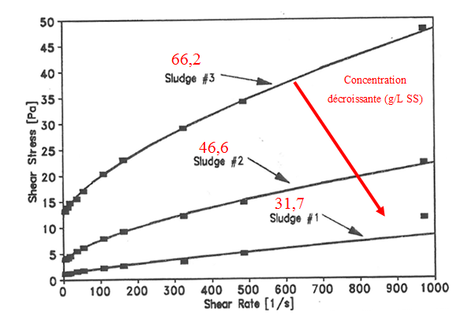
Une partie de l'étude concerne la modélisation de la colonne d'injection de vapeur et l'autre la modélisation du réacteur horizontal de lyse thermique situé en sortie de la colonne.
Pour la modélisation de la colonne d'injection, bien que la prise en compte de la dépendance des propriétés des phases en fonction de la pression et de la température soit importante, les dynamiques de changement de phase étant très violentes (écarts de vitesses et de températures très importants entre les deux phases), il s'est révélé nécessaire de simplifier le modèle en considérant la boue comme de l'eau et en utilisant des valeurs constantes des propriétés physiques des phases (valeurs prises à la pression et à la température d'entrée dans la colonne d'injection). Cette approche correspond à un bon compromis précision-stabilité pour l'élaboration du modèle de colonne d'injection.
Pour la modélisation de la partie réacteur, le système fluide étudié a été simplifié. La première hypothèse suppose que toute la vapeur injectée dans la colonne se condense avant d'atteindre le sommet de la colonne, c'est-à-dire que le réacteur horizontal de lyse thermique situé en tête de la colonne ne contient que de la boue. La seconde hypothèse considère un comportement newtonien de la boue, en la modélisant comme de l'eau, mais avec prise en compte de la dépendance des propriétés physiques en fonction de la température afin de capter les éventuels dysfonctionnements thermiques du réacteur.
La capacité thermique massique de l'eau est directement fournie par le logiciel Fluent sous la forme d'une fonction continue affine par morceaux. Les autres propriétés sont données par les formules (2.6), (2.7) et (2.8) obtenues à partir des tables de l'eau utilisées dans les techniques de l'ingénieur par Pezzani [Pezzani, 1992] et Perrot [Perrot, 2006]. Les expressions polynomiales sont obtenues en interpolant les courbes de points obtenues en traçant l'évolution de chacune des trois propriétés thermodynamiques en fonction de la température.
(2.6)
ρ = 604,4 + 3,292 × T − 0,008 × T² + 4,77 × 10⁻⁶ × T³
(2.7)
λ = −0,514 + 0,0064 × T − 9,912 × 10⁻⁶ × T² + 3,441 × 10⁻⁹ × T³
(2.8)
μ = 0,13 − 0,0013 × T + 5,067 × 10⁻⁶ × T² − 8,6 × 10⁻⁹ × T³ + 5,47 × 10⁻¹² × T⁴
avec ρ la masse volumique (en kg·m⁻³), λ la conductivité thermique (en W·m⁻¹·K⁻¹), μ la viscosité dynamique (en kg·m⁻¹·s⁻¹) et T la température (en K).
2.2 Matériel et méthode
Au vu des questions soulevées par le développement d'un modèle décrivant au mieux les phénomènes physiques intervenant dans la colonne d'injection du procédé et de l'étude bibliographique, il apparaît que vouloir traiter simultanément toutes les thématiques physiques serait compliqué.
La recherche bibliographique permet d'élaborer deux approches de modélisation simplifiées pour effectuer des simulations de la colonne d'injection et du réacteur. Ces développements nécessitent une validation en comparant les simulations à des données expérimentales issues d'une unité pilote pré-industrielle. Une fois validé, le modèle devrait pouvoir être appliqué pour modéliser et étudier des cas industriels.
Le diamètre nominal du réacteur de l'unité pilote est de 100 mm (DN 100). Dans la suite de l'étude, ces géométries sont extrapolées à une échelle industrielle en DN 450. Les dimensions des parties horizontales et verticales sont prises sur base de considération de temps de séjour.
Que ce soit à l'échelle pilote ou industrielle, les maillages ont été modifiés afin d'y inclure des mélangeurs statiques afin d'étudier leur utilité.
Parallèlement au développement du modèle de la colonne sous Fluent, une approche théorique simple est développée afin d'estimer la température liquide en sortie de colonne. Ce modèle théorique est décrit en annexe.
2.2.1 Simulation de la colonne d'injection de l'unité pilote
Le premier objectif de l'étude est de valider expérimentalement l'approche de modélisation développée pour la colonne d'injection.
La figure 2.8 représente les plans du système d'injection de la colonne de l'unité de recherche pré-industrielle initialement prévu. Les dimensions exprimées sont en millimètres. À partir de la bride, la canne plonge de 142,7 mm dans le condenseur puis, 4 rangées de 6 trous de 3 mm de diamètre permettent l'injection de vapeur.
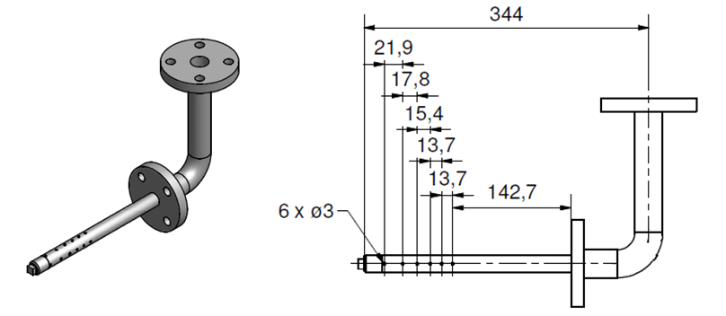
La modélisation de la colonne d'injection se base sur les dimensions de l'unité pré-industrielle de la figure 2.9 prévue pour venir alimenter en données les simulations puis tester et valider une géométrie d'injecteur. Les hypothèses du modèle de la colonne sont rassemblées dans le tableau 2.4.
| Phénomènes | Modèle |
|---|---|
| Code de calcul | Fluent V13 |
| Dimension / Temps | 3D – Instationnaire |
| Turbulence | k-ε realizable |
| Multiphasique | Euler-Euler |
| Transferts de chaleur et de masse | Chaleur (Ranz-Marshall) + Masse (évaporation-condensation) |
| Phases | Eau liquide (phase primaire) / Vapeur (phase dispersée : Ø bulle 3 mm, traînée Symmetric) |
On distingue au pied du schéma de la colonne d'injection (figure 2.9) la canne d'injection vapeur schématisée à la figure 2.8.

La vanne taguée EX-VM-0001 n'est pas modélisée car elle sera enlevée lors de l'exploitation du pilote. Toujours sur ce plan, on voit l'arrivée des boues ainsi que la canne d'injection vapeur. Le design de la canne d'injection initiale est issu du plan de fabrication présenté à la figure 2.8. La figure 2.10 représente la géométrie de la colonne et du système d'injection de la colonne de l'unité pré-industrielle modélisés sous Fluent. On voit comment la canne d'injection de la figure 2.8 prend place au sein du condenseur.
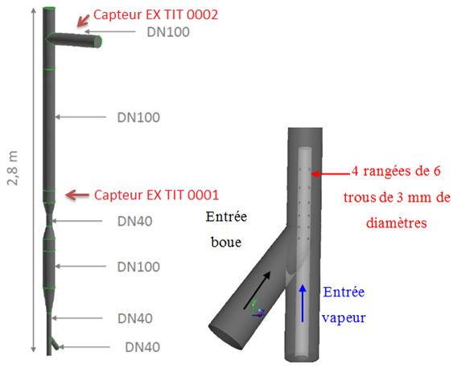
Les conditions opératoires utilisées dans cette partie correspondent aux données obtenues lors de l'exploitation de l'unité pré-industrielle sur la journée du 18/09/2012. Cette journée est représentative des conditions opératoires observées sur une longue période. Ces données comprennent une phase de démarrage puis une phase où les températures et les débits sont stabilisés. Pour obtenir les conditions opératoires ainsi que les valeurs des capteurs de température dans la colonne, une moyenne de ces valeurs a été effectuée sur une période de fonctionnement stable du procédé.
Les paramètres du modèle utilisé pour la colonne sont également récapitulés dans le tableau 2.5. Les fluides considérés sont l'eau et la vapeur.
| Phénomènes | Modèle |
|---|---|
| Code de calcul | Fluent V13 |
| Dimension / Temps | 3D – Instationnaire |
| Turbulence | k-ε realizable |
| Fluide | Eau liquide (monophasique, propriétés constantes) |
Les propriétés des corps ainsi que les conditions opératoires sont données dans le tableau 2.6.
| Eau liquide | Vapeur d'eau | |
|---|---|---|
| P (bar) | 13 | 13 |
| T (°C) | 24 | 191 |
| Q (kg h⁻¹) | 65,8 | 16,2 |
| V (m s⁻¹) | 0,014 | 4,107 |
| ρ (kg m⁻³) | 997,8 | 6,6 |
| μ (kg m⁻¹ s⁻¹) | 9×10⁻⁴ | 1,54×10⁻⁵ |
| Cp (J kg⁻¹ K⁻¹) | 4 178 | 2 866 |
| λ (W m⁻¹ K⁻¹) | 0,606 | 0,038 |
Les données expérimentales utilisées (journée du 18/09/2012) comprennent également deux températures mesurées placées comme indiqué sur la figure 2.10. Les valeurs moyennes mesurées de ces deux températures utilisées comme références sont indiquées dans le tableau 2.7. Ces valeurs moyennes sont représentatives d'un fonctionnement stabilisé du procédé.
| Capteur | Température moyenne mesurée (°C) |
|---|---|
| TIT0001 (milieu de colonne) | 149 |
| TIT0002 (tête de colonne) | 174 |
2.2.2 Simulation du réacteur de l'unité pilote
La partie réacteur du procédé est le siège de l'hydrolyse thermique. Afin d'obtenir des performances optimales de traitement, il est nécessaire :
- D'éviter la formation de gradients thermiques verticaux,
- De maîtriser le temps de séjour,
- D'obtenir une température de sortie de 160 °C.
Le second objectif de l'étude est d'utiliser le modèle du réacteur de lyse thermique pour :
- D'une part, tester différentes configurations afin de s'assurer du bon fonctionnement du réacteur,
- D'autre part, comparer sur une campagne de mesures expérimentales les résultats obtenus par simulation et ceux des capteurs afin de valider le modèle utilisé pour le réacteur.
Concernant l'étude de la partie réacteur, le tableau 2.8 rassemble les hypothèses du modèle réacteur.
| Phénomènes | Modèle |
|---|---|
| Code de calcul | Fluent V13 |
| Dimension / Temps | 3D – Instationnaire |
| Turbulence | k-ε realizable |
| Fluide | Eau liquide (monophasique, propriétés variables avec T) |
La modélisation du réacteur suit le plan de l'unité pré-industrielle présenté à la figure 2.11.

Sur ce plan n'est visible que le premier tronçon du réacteur qui en compte quatre. Différents types de simulations du réacteur sont effectuées durant l'étude :
- Sur la base des plans définitifs de l'unité de recherche pré-industrielle, trois configurations du réacteur (avec ou sans mélangeur statique) sont étudiées afin d'évaluer leur influence sur les gradients thermiques au sein du réacteur.
- Enfin, l'étape de validation du modèle du réacteur se déroule après l'obtention des données expérimentales (capteurs de température au sein du réacteur) en effectuant une comparaison entre valeurs obtenues par simulation et mesures expérimentales.
Les dimensions et caractéristiques géométriques du réacteur sont reprises dans le tableau 2.9.
| Paramètre | Valeur | |
|---|---|---|
| Diamètres | Entrée D1 | DN 100 |
| Réacteur D2 | DN 100 | |
| Sortie d | DN 40 | |
| Longueur totale L (m) | 10 | |
| Inclinaison α (°) | 3 | |
Ces éléments correspondent aux cotes de la géométrie simplifiée de la figure 2.12.

Une première série de simulations est effectuée sur la géométrie du réacteur dans plusieurs configurations. Afin de diminuer les gradients verticaux de température, des simulations sont effectuées en ajoutant un mélangeur statique dans le réacteur.
Le réacteur est constitué de quatre tronçons de 2,5 m séparés par des brides. Le mélangeur statique est constitué de 18 modules tels que schématisés figure 2.13 et sont placés uniquement sur l'un des tronçons à la fois.

Les trois configurations géométriques du réacteur représentées sur la figure 2.14 sont comparées, à savoir :
- Le réacteur actuel de l'unité pré-industrielle sans mélangeur statique,
- Le réacteur avec mélangeur dans le troisième tronçon plus en aval du réacteur,
- Le réacteur avec mélangeur dans le deuxième tronçon situé en amont du réacteur, à la sortie de la colonne de condensation.
Pour ces trois configurations seront comparés les profils de températures au sein du réacteur aux emplacements 1, 2 et 3.

L'étape de validation du modèle du réacteur se déroule après l'obtention des données expérimentales (capteurs de température au sein du réacteur) en effectuant une comparaison entre simulation et mesures expérimentales.
2.2.3 Extrapolation à l'échelle industrielle
L'unité de recherche pré-industrielle a un diamètre nominal de 100 mm [DN100]. Le diamètre d'une installation industrielle sera à minima de 450 mm [DN 450]. Se pose la question de l'impact du « scale-up » sur le fonctionnement du procédé et donc l'injection et la condensation de la vapeur.
L'étude numérique à l'échelle industrielle consiste donc à appliquer le modèle en question mais uniquement sur la partie verticale, à savoir le condenseur. La partie horizontale, à savoir le réacteur, n'est pas modélisée à l'échelle industrielle dans ce qui suit.
La géométrie prise en compte pour étudier ce scale-up est basée sur les caractéristiques de l'échelle pilote avec les ajustements suivants :
- La prise en compte d'un diamètre nominal DN 450,
- Une seule canne d'injection de vapeur en partie basse, au sein de la canalisation d'amenée des boues,
- La présence d'un Venturi en DN200,
- L'ajout ou non d'un mélangeur statique en partie haute.
La figure 2.15 rassemble ces différents éléments et leurs dimensions dans une configuration avec mélangeur statique. Des simulations sans cet élément ont également été effectuées afin d'estimer son impact.

La méthode d'injection de vapeur dans cette géométrie reste un injecteur unique comme dans le cas du pilote mais avec un plus grand nombre de perforations. La figure 2.16 représente cet injecteur qui dispose de 198 orifices de 3 mm de diamètre, répartis en 6 lignes d'injection arrangées en étoile. Le mélangeur statique en tête de condenseur est constitué par 9 spires espacées de 104 mm, avec un noyau central évidé de 182 mm. Des guides flux compartimentent le bas de chaque spire ; comme indiqué sur la figure 2.17, leur hauteur est de 20 mm.
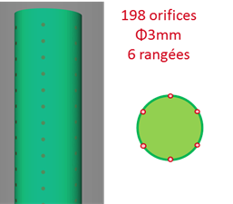
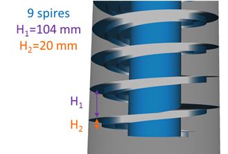
Le modèle développé à l'échelle pré-industrielle est donc appliqué à la géométrie industrielle du procédé. Les paramètres sont récapitulés dans le tableau 2.14. Le procédé est simulé en condition d'eau et non de boue mais les résultats relatifs entre eux permettent d'éclairer le comportement de l'injection vapeur pour un procédé taille industrielle.
| Phénomènes | Modèle |
|---|---|
| Code de calcul | Fluent V13 |
| Dimension / Temps | Instationnaire puis Stationnaire |
| Turbulence | k-ε realizable |
| Multiphasique | Euler-Euler |
| Transferts de chaleur et de masse | Chaleur (Ranz-Marshall) + Masse (évaporation-condensation) |
| Fluides | Eau + vapeur |
| Phases | Eau liquide (phase primaire) / Vapeur (Ø 3 mm, traînée Symmetric) |
| Conditions | 11 bars + Gravité |
| Conditions aux limites | Entrées : vitesse imposée — Sortie : pression libre |
| Discrétisation | 1er ordre |
Les propriétés des corps ainsi que les conditions opératoires sont données dans le tableau 2.15.
| Eau liquide | Vapeur d'eau | |
|---|---|---|
| P (bar) | 11 | 11 |
| T (°C) | 12 | 184 |
| Q (kg h⁻¹) | 2 900 | 1 149 |
| V (m s⁻¹) | 0,043 | 40 |
| ρ (kg m⁻³) | 999,6 | 5,6 |
| μ (kg m⁻¹ s⁻¹) | 1,24×10⁻³ | 1,50×10⁻⁵ |
| Cp (J kg⁻¹ K⁻¹) | 4 189 | 2 642 |
| λ (W m⁻¹ K⁻¹) | 0,592 | 0,036 |
Il est à noter la forte différence de vitesse entre les deux phases en présence, élément de complexité dans ce procédé. Les deux géométries, avec et sans mélangeur statique, sont étudiées. Comme indiqué dans le tableau 2.14, un solveur instationnaire permet tout d'abord d'obtenir la réponse transitoire du système lors d'un démarrage depuis un état froid. Ensuite un solveur stationnaire donne la réponse du système dans son état permanent, ne dépendant plus du temps.
2.3 Résultats et discussions
2.3.1 Simulation de la colonne d'injecteur pilote
Une simulation est effectuée dans les conditions opératoires décrites dans la partie précédente en régime transitoire avec une température initiale du liquide dans la colonne égale à celle de la température d'entrée du liquide.
L'objectif est, au-delà de l'analyse de mise en régime du procédé estimée par le modèle, de comparer les valeurs stabilisées issues de la modélisation avec les moyennes (effectuées sur la plage temporelle stabilisée) des capteurs de température du pilote TIT0001 et TIT0002 dont leur emplacement sur l'unité pilote est indiqué sur la figure 2.10.
La simulation se déroule jusqu'à la stabilisation des températures en milieu et en sortie de colonne. La courbe suivante (figure 2.18) représente l'évolution de la température au milieu de la colonne.
La courbe bleue représente l'évolution de la température simulée et la ligne rouge la température expérimentale mesurée au milieu de la colonne (moyenne effectuée sur la plage temporelle stabilisée).
On observe sur la figure 2.18 que les valeurs simulées oscillent à partir de 30 minutes de temps physique autour d'une valeur que l'on peut estimer à 130 °C, soit une différence de 19 °C par rapport à la valeur expérimentale de 149 °C.
De la même façon, et pour les mêmes phénomènes analysés, sur la figure 2.19, on observe une oscillation des valeurs simulées à partir de 30 minutes de temps physique autour d'une valeur que l'on peut estimer à 130 °C, soit une différence de 44 °C avec la valeur expérimentale de 174 °C.


Plusieurs analyses se dégagent :
- Au bout de 30 minutes, que ce soit au milieu ou bien en partie haute de la colonne de condensation, le modèle prédit une inhomogénéité des températures. Ces mêmes températures variant de 100 à plus de 160 °C.
- Cette inhomogénéité est due à la présence de poches de vapeur présentes tout au long de la colonne de condensation.
- Ces poches impliquent que la vapeur ne se condense que partiellement.
- Bien qu'en considérant ces poches de vapeur comme partiellement condensées, les températures simulées sont toujours moindres que les valeurs expérimentales. Il est difficile de déterminer la fraction de vapeur réellement condensée.
- Les valeurs moyennes présentent des écarts respectifs de 19 et 44 °C ce qui, compte tenu des simplifications et hypothèses retenues, pourraient être affinés. Toute proportion gardée, le modèle peut servir de base de réflexion aux géométries étudiées.
Dans cette partie sont confrontées des données obtenues par simulation et celles obtenues expérimentalement dans les mêmes conditions opératoires afin de valider le modèle développé pour la colonne d'injection. Cette confrontation se déroule en comparant les valeurs de températures obtenues par des thermocouples en deux points de la colonne : au milieu et en tête de celle-ci (figure 2.10).
Les résultats obtenus par simulation présentent une sous-estimation de la température donnée par les thermocouples de l'ordre de 25 % dans les deux cas (figures 2.18 et 2.19). Cependant, moyennant cette marge d'erreur, le modèle actuel peut être utilisé qualitativement pour étudier et comparer différentes configurations.
2.3.2 Simulation du réacteur pilote
L'objectif de cette partie est de comparer le modèle numérique développé et les mesures expérimentales de températures sur le réacteur. Une simulation est effectuée dans les conditions opératoires décrites précédemment.
Concernant les conditions opératoires pour cette comparaison entre modèle et expérience, les données de la journée du 16/08/2012 sont utilisées et notamment la montée en température en entrée du réacteur des deux capteurs TIT0002 et TIT0005 (voir figure 2.21). Le positionnement des sondes de températures sur le réacteur de l'unité pilote est schématisé à la figure 2.20.

Les résultats obtenus au bout de 30 min au milieu et en sortie du réacteur sont représentés sur la figure 2.21. La figure 2.22 représente les résultats obtenus au bout de 60 min au milieu et en sortie du réacteur.
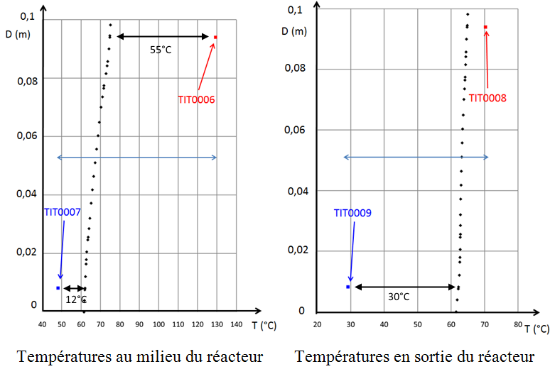
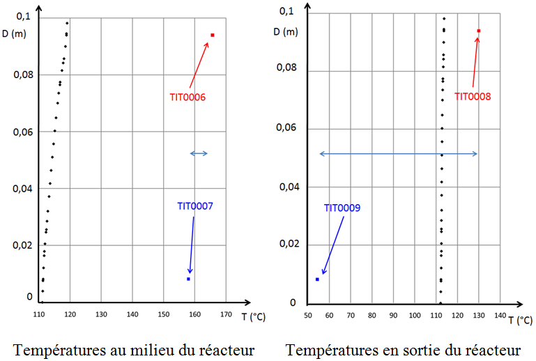
Les points noirs représentent le profil de températures verticales obtenu par simulation. Les valeurs données par les capteurs situés au milieu (la sonde TIT0006 située en bas du réacteur et la sonde TIT0007 située en haut du réacteur) et en fin de réacteur (la sonde TIT0008 pour la partie basse et la TIT0009 pour la partie haute) sont indiquées sur chacune des figures.
Sur la figure 2.21 sont représentés en pointillés noirs les valeurs du profil de température simulées après 30 minutes de temps physique. Ce profil simulé de température au milieu du réacteur est relativement homogène et présente un écart de température entre le haut du réacteur horizontal (en D = 0,1 m) et le bas du réacteur horizontal (en D = 0 m) de 15 °C.
En comparaison avec les valeurs expérimentales moyennes des sondes TIT0007 et TIT0006, il ressort que le modèle surestime de 12 °C la température basse du réacteur par rapport à la mesure réelle TIT0007 mais sous-estime grandement la température réelle de la partie haute. Ainsi, l'écart entre la valeur haute du profil simulé et la mesure TIT0006 est de 55 °C.
En sortie du réacteur, après 30 minutes de temps physique, le modèle aboutit à un profil de température homogène ne présentant quasiment pas de gradient de température. Les valeurs du profil simulé, toujours représenté en pointillés noirs, se rapprochant de la température réelle mesurée par la sonde TIT0008 en partie haute (à environ 5 °C près). La valeur réelle TIT0009 est en revanche très en deçà de la valeur du modèle avec un écart de plus de 30 °C.
Sur la figure 2.22 sont présentés les profils de températures simulées après 60 minutes de temps physique.
Au milieu du réacteur, il apparaît que le profil simulé, se situant autour de 110 °C, présente un gradient de température entre le haut et le bas du réacteur de moins de 10 °C. Ce résultat présente un écart significatif avec les valeurs expérimentales des sondes TIT0006 et TIT0007 qui sont de près de 160 °C en partie basse pour la sonde TIT0007 et de plus de 165 °C pour la sonde TIT0006 en partie haute. Ces deux températures sont du même ordre de grandeur au milieu du réacteur ce qui n'est plus le cas en sortie du réacteur où la sonde TIT0009 du bas indique une valeur de 55 °C, la TIT0008 du haut indique 130 °C alors que le profil simulé est stable sur tout le diamètre du réacteur à 112 °C.
Sur les figures 2.21 et 2.22 le modèle aboutit à des profils de températures présentant de faibles gradients thermiques verticaux ce qui ne corroborent pas les valeurs expérimentales. Le modèle du réacteur considère la boue entrant dans le réacteur comme de l'eau dont les propriétés physiques (masse volumique, capacité thermique, conductivité thermique, viscosité) dépendent de la température.
Bien que ce modèle permette de visualiser une légère inhomogénéité verticale des températures au milieu ainsi qu'en sortie du réacteur, il reste éloigné de la réalité expérimentale. La rhéologie des boues n'est pas prise en compte mais elle doit avoir un impact important sur les écoulements et les gradients.
L'intérêt du mélangeur statique :
L'impact de la présence d'un mélangeur statique situé au sein du réacteur horizontal est à étudier. Contrairement aux simulations précédentes, l'unité pré-industrielle n'étant pas équipée de mélangeur statique, aucune mesure expérimentale ne peut permettre de mettre en perspective les résultats simulés.
Les paramètres du modèle utilisé pour effectuer les simulations visant à valider le modèle du réacteur sont récapitulés dans le tableau 2.10 :
| Phénomènes | Modèle |
|---|---|
| Code de calcul | Fluent V13 |
| Dimension / Temps | 3D – Instationnaire |
| Turbulence | k-ε realizable |
| Transferts de chaleur | Convection + conduction |
| Fluide | Eau liquide |
| Conditions | Gravité + 9 bars |
| Conditions aux limites | Entrée : vitesse imposée — Sortie : pression libre |
| Discrétisation | 2e ordre |
Pour la comparaison entre simulation et mesures expérimentales les données du pilote de la journée du 16/08/2012 sont utilisées. Comme représenté sur la figure 2.20, le réacteur dispose de 4 capteurs de température (Nord, Sud, Est, Ouest) en entrée, les capteurs Nord et Sud étant dénommés respectivement TIT0002 et TIT0005. La figure 2.23 représente l'évolution de la température de ces deux capteurs sur deux heures de fonctionnement.
Pour effectuer une comparaison entre le modèle et l'expérimentation, le réacteur est modélisé en considérant l'entrée du système à partir de l'emplacement de ces capteurs. Les valeurs indiquées par les autres capteurs situés au milieu (TIT0006 et TIT0007) et en fin de réacteur (TIT0008 et TIT0009) sont utilisées pour la comparaison avec la simulation.
Le débit du fluide en entrée est de 66 l/h mais avec des températures différentes pour la partie haute et basse de l'entrée du réacteur (figure 2.20).
Les conditions d'entrée en température utilisées pour la simulation sont celles données par les deux capteurs TIT0002 et TIT0005, c'est-à-dire deux profils de température en fonction du temps (figure 2.23).

Le tableau 2.11 rassemble les conditions opératoires et limites des simulations effectuées pour la validation du modèle de réacteur.
| Paramètre | Valeur |
|---|---|
| Conditions générales | Gravité + 9 bars |
| Vitesse d'entrée (m s⁻¹) | 2,2×10⁻³ |
| Température d'entrée | Deux profils (partie haute et partie basse) |
| Température initiale (°C) | 24 |
Les paramètres du modèle utilisé pour les simulations du réacteur dans différentes configurations sont récapitulés dans le tableau 2.12 :
| Phénomènes | Modèle |
|---|---|
| Code de calcul | Fluent V13 |
| Dimension / Temps | 3D – Instationnaire |
| Turbulence | k-ε realizable |
| Transferts de chaleur | Convection + conduction |
| Fluide | Eau liquide |
| Conditions | Gravité + 9 bars |
| Conditions aux limites | Entrée : vitesse imposée — Sortie : pression libre |
| Discrétisation | 2e ordre |
Les conditions opératoires et les conditions limites des simulations effectuées sur le réacteur dans différentes configurations sont récapitulées dans le tableau 2.13 :
| Paramètre | Valeur |
|---|---|
| Conditions générales | Gravité + 9 bars |
| Vitesse d'entrée (m s⁻¹) | 2,2×10⁻³ |
| Température d'entrée (°C) | 170 |
| Température initiale (°C) | 24 |
L'intérêt de l'ajout d'un mélangeur statique dans le réacteur horizontal pour homogénéiser les températures est étudié en trois endroits. Les profils de températures verticaux de ces 3 configurations sont représentés aux différentes positions nommées 1, 2 et 3 de la figure 2.14 dans le réacteur et à différents instants de la simulation sur les figures 2.24 et 2.25.
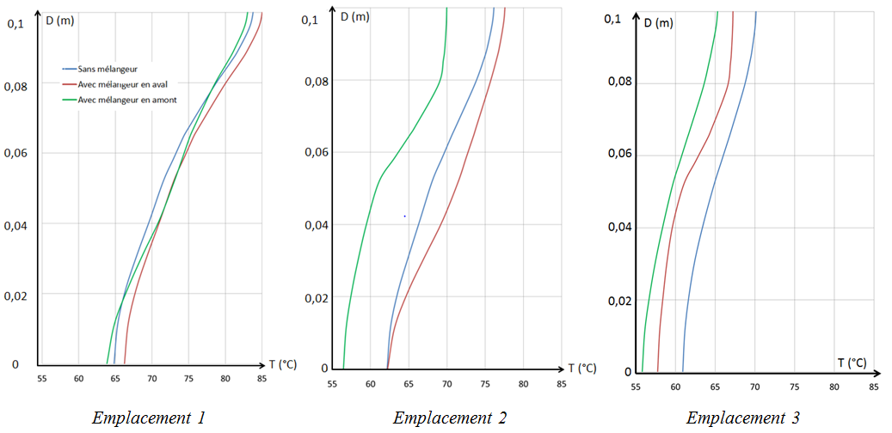
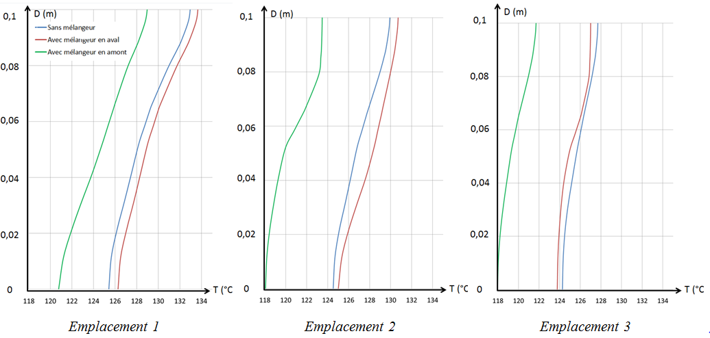
Les profils observés situés à l'emplacement 1, après 15 minutes de temps physique et quelle que soit la présence ou l'absence de mélangeur statique ou bien sa position, les gradients ont quasiment les mêmes profils et les mêmes delta de températures de l'ordre de 20 °C. Au bout de 60 minutes, la situation reste identique avec des profils similaires mais une différence de température entre la partie haute et basse du réacteur de l'ordre de 10 °C.
Les observations sont du même ordre aux emplacements 2 et 3. La seule différence mineure vient des différences de températures qui, au bout de 15 minutes, passent à 20 °C à l'emplacement 1 à respectivement 15 et 8 °C aux emplacements 2 et 3. De même, après un temps physique de 60 minutes, ces mêmes différences passent de 10 à respectivement 8 et 5 °C.
Ainsi, les cas analysés indiquent la présence d'un gradient de température sur le diamètre du réacteur. Les différences de gamme de températures entre les 3 cas à 15 et 60 minutes de temps physique (position d'une courbe par rapport à l'autre) tendraient à s'estomper avec l'établissement d'un régime permanent sur des temps physiques plus longs. Les gradients de températures sur le diamètre étant proches entre les 3 cas induisent que le mélangeur statique étudié n'a pas d'influence significative et bénéfique sur la stratification thermique dans le réacteur. Ce phénomène pourrait s'expliquer par la faible vitesse d'écoulement du fluide.
Sur la base des plans définitifs du pilote, différentes configurations du réacteur (avec ou sans mélangeur statique) ont été étudiées afin d'évaluer leur influence sur les gradients thermiques au sein du réacteur.
Une comparaison des résultats obtenus par simulation à ceux mesurés expérimentalement sur site a été effectuée afin de valider le modèle développé pour le réacteur d'hydrolyse thermique. Les résultats obtenus pour les simulations mettent en évidence un léger phénomène de stratification thermique vertical de l'ordre de 10 °C à 15 °C. Cette stratification de température est aussi observée expérimentalement avec toutefois un ordre de grandeur des écarts plus importants allant de 40 à 80 °C.
Ce plus grand écart expérimental pourrait s'expliquer par les simplifications du modèle qui ne prend pas en compte tous les phénomènes liés à la rhéologie des boues qu'il serait compliqué d'implémenter dans Fluent. Il se pourrait également qu'une partie de la vapeur ne soit pas condensée en sortie de colonne de condensation et que les sondes situées en partie haute du réacteur mesurent la température de poches de vapeur ce qui expliquerait les gradients de température importants sur un réacteur en DN 100.
Le modèle simplifié en eau a une utilité puisqu'il permet de mettre en évidence le phénomène d'inhomogénéité thermique verticale dans le réacteur, phénomène ne pouvant être freiné par l'emploi de mélangeur statique probablement à cause de vitesses de passage trop faibles. Là encore, le passage en boue avec des rhéologies plus complexes devrait encore accentuer ce phénomène.
2.3.3 Extrapolation du réacteur à une échelle industrielle
2.3.3.1 Mise en régime attendue d'une unité industrielle
Dans un premier temps, un solveur instationnaire est utilisé pour obtenir la réponse transitoire depuis un état initial froid, sur les conditions d'entrée de l'eau. Les profils de température et de fraction volumique de vapeur sont présentés sur un plan à mi-coupe dans les figures 2.26 à 2.33 pour des temps physiques de simulation de 2, 12, 30 et 80 secondes, respectivement sur chaque figure sans et avec mélangeur statique en tête de condenseur. Le temps de séjour du liquide, calculé sur l'ensemble du volume, est de 700 secondes.
L'échauffement du système s'établit progressivement, mais les profils indiquent que pour un même temps physique, la présence du mélangeur statique induit un échauffement plus rapide du liquide. Ceci s'explique en analysant les profils de fraction volumique de vapeur de la figure 2.26. La dynamique de la vapeur dans le système s'établit sous forme de poches et de langues qui remontent directement au centre du condenseur. Le mélangeur statique évite cette remontée directe de la vapeur sous forme de langue, et augmente le temps de contact entre le liquide et la vapeur. Ce phénomène est également induit par la présence du Venturi, zone où se concentrent les fortes fractions volumiques de vapeur. L'étude dynamique de la zone de l'injection montre une bonne répartition du flux sur l'ensemble de la périphérie de l'injecteur, et une injection haute vitesse qui semble se dérouler correctement et uniformément sur cet ouvrage avec de fortes turbulences locales.
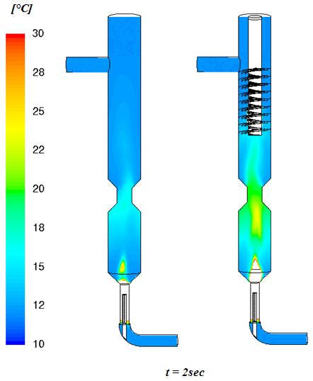
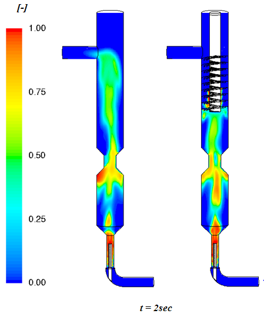
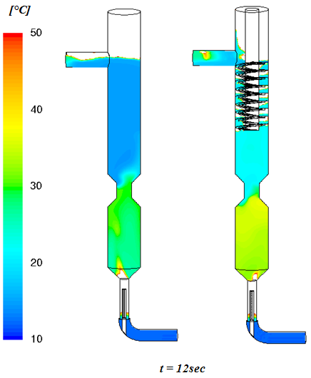
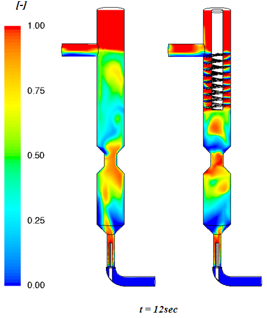
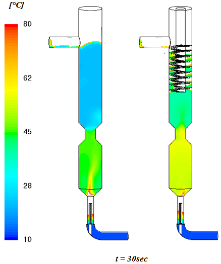
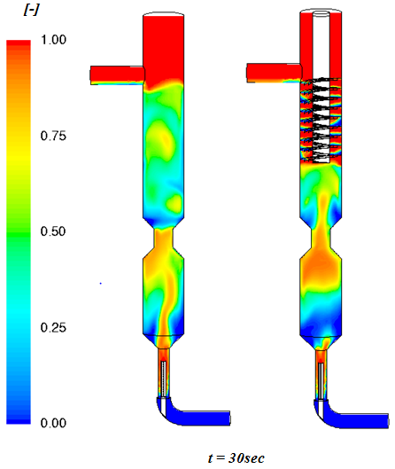
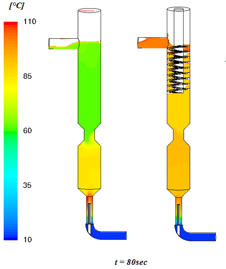
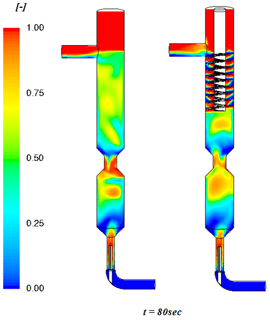
L'absence de mélangeur statique, en réduisant les temps de contact entre les phases, induit des gradients thermiques verticaux plus longs. Ainsi au bout de 80 secondes, sur la figure 2.32, le profil de température semble quasiment établi dans le cas avec mélangeur statique, alors qu'il est toujours en forte évolution dans le cas sans mélangeur statique.
Rapidement une accumulation de vapeur se produit en tête du condenseur, jusqu'à former une poche qui s'échappe par la sortie liquide. La présence du mélangeur tend à réduire ce phénomène en augmentant le temps de contact entre les phases.
Même si l'injection haute vitesse semble se dérouler correctement, la présence post-injection de poches de vapeur jusqu'en tête de colonne montre que le transfert de masse par condensation devrait cependant encore être optimisé.
L'emploi d'un organe d'injection-mélange (mélangeur statique avec injecteur, pompe spécifique…) dès le pied de colonne serait une bonne option afin d'optimiser le procédé.
2.3.3.2 Régime permanent de l'unité industrielle
L'état de fonctionnement permanent, donc indépendant du temps, est obtenu via un solveur stationnaire. Les figures 2.34 à 2.36 présentent les profils de température, de fraction volumique de vapeur et de transfert de masse entre phases respectivement sans et avec mélangeur statique. Conformément à l'analyse transitoire précédente, ces résultats indiquent un impact positif du Venturi dans les deux configurations. Le venturi retient la vapeur d'eau et évite une remontée directe de cette vapeur. De la même manière, la présence du mélangeur statique accentue cet effet et semble rendre le procédé encore plus efficace.
Les profils thermiques de la figure 2.34 indiquent un meilleur échauffement du liquide dans le cas avec mélangeur statique, avec des températures liquides en tête respectivement de l'ordre de 130 °C et de 100 °C, avec et sans mélangeur statique. Les gradients verticaux s'amoindrissent, ce qui montre que les phénomènes mis en jeu sont très rapides et que la zone d'injection est capitale pour un bon fonctionnement du procédé.
Il n'existe pas de gradient horizontal, ce qui indique un bon mélange et une utilisation de tout le volume de la colonne. Les zones où le transfert de masse est le plus important se situent à proximité de l'injecteur, dans la zone du Venturi ainsi que dans le mélangeur statique. L'ensemble de ces analyses montre l'impact positif du mélangeur statique de tête sur les performances du procédé. La présence de poches de vapeur jusqu'en tête de colonne même en régime permanent indique qu'une optimisation de l'injection-mélange serait à étudier avec un dispositif adapté.
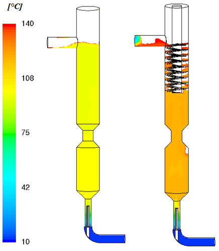
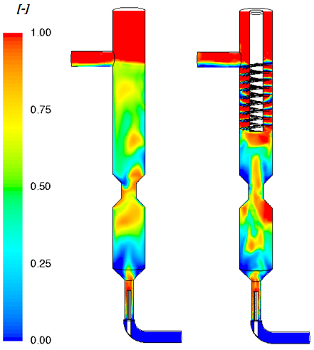
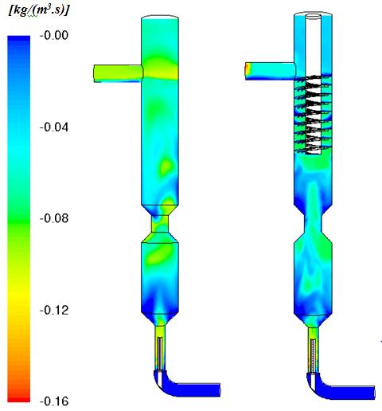
Le « scale-up » de la géométrie pilote vers la géométrie industrielle montre que :
- L'injecteur semble à peu près fonctionner correctement avec un mélange local de phases turbulent.
- Le venturi s'avère nécessaire, notamment lorsque le diamètre des installations augmente afin d'éviter une remontée directe de la vapeur au centre du condenseur. Son intérêt sera validé sur l'unité expérimentale pour des raisons de temps.
- Le mélangeur statique de tête est également bénéfique sur le temps de contact entre phases, et donc directement sur l'échauffement liquide.
Bien que le modèle montre un impact bénéfique du mélangeur statique il faut garder à l'esprit que la matrice réelle des boues présentera une viscosité élevée et donc des pertes de charge importantes non quantifiables qui seront liées à sa géométrie.
Même si le mélange local des phases au niveau de l'injecteur semble satisfaisant, il est à noter que des poches de vapeur restent dans le système et se propagent jusqu'en tête de colonne. Des éléments d'injection-mélange en partie basse de colonne, comme par exemple un combiné injecteur-mélangeur ou un mélangeur dynamique permettrait d'améliorer la phase d'injection du procédé et permettre une injection simplifiée et une meilleure condensation de la vapeur.
2.4 Conclusion
Les phénomènes physiques en jeu dans un procédé d'hydrolyse thermique devant fonctionner en continu sont complexes (injection de vapeur à hautes vitesses dans de la boue très concentrée, phénomènes d'évaporation-condensation, fluide non-newtonien, etc.) et non directement observables (le réacteur étant sous pression et la boue étant opaque).
Concernant la colonne d'injection de vapeur, la confrontation des données obtenues par le modèle à celles obtenues expérimentalement sur l'unité pré-industrielle montre que celui-ci sous-estime la température dans la colonne de l'ordre de 25 % par rapport à la valeur expérimentale. Cependant, moyennant cette marge d'erreur, le modèle actuel peut être utilisé qualitativement pour étudier et comparer différentes configurations. Les résultats des simulations indiquent une dynamique de vapeur sous forme de poches et une condensation imparfaite illustrée par une sortie de vapeur en tête de la colonne. La présence de cette vapeur non condensée sera constatée expérimentalement sur la base de mesures de température.
Concernant le réacteur d'hydrolyse thermique, les résultats obtenus pour les simulations mettent en évidence un phénomène de stratification thermique vertical de l'ordre de 10 à 15 °C, ceci malgré l'inclinaison du réacteur et la mise en place d'ailettes internes. Ce phénomène est également mis en évidence expérimentalement par les thermocouples Nord/Sud du pilote avec un ordre de grandeur plus important (40 °C – 80 °C).
Le développement de ces deux modèles permet alors, moyennant les précisions énoncées, d'étudier le procédé sur des échelles plus importantes et notamment en prévision de projets industriels en cours ou futurs.
Le modèle d'injection de vapeur développé est appliqué à une géométrie de taille industrielle. Les réacteurs modélisés passent d'un DN100 à un DN 450. Les résultats obtenus à cette échelle s'avèrent cohérents avec l'échelle pilote, à savoir un mélange de phases turbulent au niveau de l'injection, des dynamiques de vapeur sous forme de poches au sein de la colonne et donc un impact bénéfique du Venturi permettant de freiner le phénomène de remontée directe de la vapeur au centre. Les simulations avec et sans la mise en place du mélangeur statique en tête de colonne montrent que sa présence induit, tout comme le Venturi, un maintien de la vapeur dans la colonne et donc une augmentation de l'échange entre phases en régime transitoire comme en régime permanent. Dans ce dernier régime, la température en tête de colonne sans et avec mélangeur statique est respectivement estimée par le modèle à 100 °C et 130 °C, soit un gain de 30 %.
La présence de poches de vapeur en tête de colonne reste un point à améliorer. Au-delà de l'impact d'un mauvais transfert de chaleur sur les performances de l'hydrolyse, de la vapeur non condensée devrait induire un gradient thermique dans le réacteur entre une phase vapeur en partie haute et une phase liquide en partie basse. Cette différence de phase pourrait se traduire par une différence de température importante provoquant des déformations mécaniques du réacteur du fait de sa dilatation.
Un organe d'injection-mélange en pied de colonne, type mélangeur statique avec injecteur ou mélangeur dynamique d'injection spécifique serait une des voies d'amélioration à tester pour s'assurer de la condensation de la vapeur dans la boue et ce, dès l'injection.
Le modèle développé permet d'étudier relativement différentes configurations de la colonne d'injection (par exemple mélangeur statique différent, deuxième Venturi, mélangeur en partie basse) et de visualiser l'impact sur la condensation de vapeur et l'échauffement de la boue. Une validation expérimentale est cependant nécessaire.
Remarques : les profils de température modélisés à la figure 2.32 pour un condenseur à taille industrielle et un temps maximum de 80 secondes sont différents de ceux obtenus aux figures 2.18 et 2.19 sur un temps de plusieurs minutes. Trois explications pourraient expliquer cet écart à savoir :
- un effet d'échelle de la modélisation quoique l'on devrait s'attendre à retrouver une certaine homothétie,
- des conditions opératoires légèrement différentes bien que ceci ne devrait pas aboutir à une si significative différence.
Modéliser des phénomènes d'évapo-condensation n'est pas simple et le code commercial utilisé semble présenter des limites lorsque l'on compare deux tailles de géométrie ayant des phénomènes et conditions opératoires similaires.
Pour aller plus loin il serait envisageable de comparer les modélisations avec un autre code tel que Saturne, développé spécialement pour l'étude des phénomènes d'évapo-condensation mais qui nécessite un calage avec des résultats expérimentaux, ou bien de développer un module Fluent métier.
Modelling of the continuous thermal hydrolysis process
The process proposed for study is the first thermal hydrolysis process for sludge intended to operate continuously. The flow rate and dry solids content of the sludge to be treated can vary and be adjusted during continuous operation. Figure 2.1 represents the complete process, showing the arrival of dewatered sludge, the steam injection point, the reactor, a series of two heat exchangers, and a dilution water injection.
The reactor consists of two parts: a vertical column serving for steam injection and condensation, and a horizontal section to ensure the reaction time. These two parts have specific constraints and will be addressed individually.
The first heat exchanger is used to recover energy to preheat the feed water for the steam boiler supplying the system. The second heat exchanger cools the sludge to reach the desired temperature in the digester. The dilution water is used to lower the temperature of the sludge, and thus to optimise the sizing of the second heat exchanger, and to control and adjust the suspended solids concentration of the sludge entering the digester to 100–120 g/l. As a reminder, beyond this value, digester mixing problems arise due to excessively high viscosity, as well as ammonia concentrations that can inhibit the methanogenic phase.
Steam injection into the condensation column is intended to be carried out by an injection lance fitted with multiple holes. However, many uncertainties remain regarding the geometry of this lance, namely:
- Is the geometry of the injection lance optimal?
- Does this geometry allow steam to condense rapidly within the system?
- Will it achieve perfect temperature homogeneity throughout the reactor? Any temperature gradient between the upper and lower parts of the reactor could cause mechanical stresses due to differential thermal expansion. Any temperature inhomogeneity could lead to imperfect sludge treatment.
- Is it possible to envisage an alternative injection lance design?
- Could this new design be scaled up to a larger reactor size?
Furthermore, in the middle of the vertical section a restriction was arbitrarily installed in order to promote steam condensation. In the upper part, a spiral is intended to be fitted to complete steam condensation. The horizontal reactor was inclined at 5% to improve temperature homogeneity. These elements form part of the original patent but are not based on any scientific foundation [Hojsgaard, 2011]. Some of these points will be evaluated in this work.
For reasons of cost and schedule, it was decided to develop a numerical model to simulate the expected evaporation-condensation phenomena rather than to conduct design of experiments.
This approach requires understanding the interactions to be modelled and calibrating the model against reality. The construction of a pre-industrial pilot unit is planned with the aim of supporting the simulation phase in order to confirm the simulation results, and then, if a satisfactory geometry emerges, to test it and validate the efficiency of the sludge-steam transfer.
2.1 Approach to the phenomena to be modelled
2.1.1 Modelling of the steam injection column
Figure 2.2 schematically represents the saturated steam injection column under study and the interactions between the phases. Saturated steam is injected at the centre of the vertical section via an injection lance. The steam is thus brought into direct contact with the sludge.
The orders of magnitude of the operating conditions of the system to be studied are given in Table 2.1.
| Inlet velocity (m s⁻¹) | Pressure (bar) | Inlet temperature (°C) | Suspended solids concentration (g/L) | |
|---|---|---|---|---|
| Saturated steam | 10 to 100 | 5 to 16 | Tsat | – |
| Sludge | 10⁻³ to 10⁻¹ | 8 to 14 | 25 | 120 to 250 |
The pressure applied to the sludge in the system must be able to vary from 5 to 14 bar, corresponding to hydrolysis temperatures of 150 and 195 °C.
The steam ejection velocity at the holes of the injection lance used as the baseline model is considered to range from 10 to 40 m·s⁻¹. The steam pressure varies from 8 to 14 bar. Part of this steam pressure is required to overcome the pressure losses due to the sludge, and the residual pressure serves to keep the reactor under pressure so that the treated fluid does not vaporise.
As illustrated in Figure 2.2, the system to be modelled is a multiphase flow subject to evaporation-condensation phenomena. The phases present are:
- Saturated water vapour
- Wastewater treatment sludge (a mixture of water and bio-solids)
The physical phenomena to be taken into account are:
- The equations governing the motion of each phase: sludge and saturated water vapour,
- Turbulence models for each phase,
- Energy transport and transfer equations (including the energy transfer due to evaporation-condensation phenomena),
- The mass transfer model due to evaporation-condensation,
- The determination of the interfacial area between the sludge and the water vapour,
- The dependence of the physical properties of the phases on pressure and temperature,
- The rheology of sludge and in particular its evolution due to evaporation-condensation phenomena.
2.1.2 Modelling of the horizontal reactor
Figure 2.3 schematically represents the thermal lysis reactor under study.
The orders of magnitude of the operating conditions of the system to be studied are given in Table 2.2. At this stage, the steam is assumed to be perfectly condensed. The sludge temperature is considered to be between 150 and 170 °C. The reactor is intended to be maintained at a pressure of 9 to 10 bar.
| Inlet velocity (m s⁻¹) | Pressure (bar) | Inlet temperature (°C) | |
|---|---|---|---|
| Sludge | 5×10⁻³ to 10⁻¹ | 9 to 10 | 150 to 170 |
2.1.3 Existing methodologies for the phenomena involved
The phenomena at play in the column of the process under study are complex (high-velocity steam injection into highly concentrated sludge, evaporation-condensation phenomena). In order to develop a modelling approach for the injection column of the process, it proved necessary to carry out:
- A literature review on the modelling of evaporation-condensation phenomena,
- A methodology developed on the basis of feedback from experts identified during the literature review, in order to model the phenomena at play in the column using the ANSYS-Fluent computational fluid dynamics code.
In the following section, the various physical phenomena occurring in the column and the reactor are presented, along with how they are incorporated into the models used in this study (column model and reactor model).
2.1.3.1 Choice of the two-phase model
It emerges from the state of the art that:
- The Euler-Euler two-phase approach is relatively common [LeMoullec, 2008; Olmos, 2003; Wang, 2009; Pfleger, 2001].
- A few three-phase flow studies are beginning to emerge [Wang, 2010; Wang, 2009].
- Three-phase (complex) problems can be simplified at other levels of the physics: for example, turbulent flows in 2D instead of 3D [Wang, 2009].
- In contrast, the two-phase approach with heat transfer and phase change is far less common (no three-phase) [Lee, 1979].
- All these flows are resolved in "rather simple" 3D geometries (pipes, tanks, counter-current fluids) [LeMoullec, 2010; Millies, 1999; Olmos, 2003].
- For complex geometries in motion (stirring and impellers), the physics is simplified as much as possible while retaining the turbulence aspects (which contribute to mixing): single-phase turbulent flows, with two-phase mixing beginning to appear [Wang, 2010].
The article by Jamaleddine deals with the evaporation of water vapour from the surface of particles [Jamaleddine, 2011]. Evaporation (mass and heat transfer) is treated by correlations based on dimensionless numbers (Nusselt, Sherwood, transfer coefficients) and a mass transfer term. The turbulence model used is a standard k-ε model.
This article is a key reference. The study is structured under Fluent (models, equations and properties, mesh, experiment) and concerns the evaporation of solid sludge.
In his articles, LeMoullec develops a gas-liquid two-phase model in an activated sludge reactor, taking into account hydrodynamics, mass transfer and biological reactions. He bases his two-phase approach on an Euler-Euler model, incorporating a drag coefficient adapted for bubbles whose size he determined experimentally [LeMoullec, 2008, 2010, 2011].
In his articles, Wang develops a gas-liquid-solid three-phase model in a bioreactor, coupling hydrodynamics and biological reactions. Their system is treated in 2D but his approach is three-phase. He uses an Euler-Euler approach and, for turbulence, a standard k-ε model with additional terms added to account for the turbulence generated at the interfacial area [Wang, 2005; Wang, 2010].
It emerges from the state of the art on the two-phase aspect of the problem that the Euler-Euler model is recommended by the experts identified in the literature [LeMoullec, 2011, 2010, 2008; Olmos, 2003; Wang, 2009, 2010; Lee, 1979].
2.1.3.2 Choice of the turbulence model
It emerges from the state of the art of the turbulence models studied that:
- Turbulence arises essentially from the two-phase aspects.
- A term is added to refine the k-ε model (to account for the bubble-induced turbulence effect).
The authors identified in the two-phase approach — Jamaleddine, LeMoullec and Wang — use a k-ε type turbulence model. Its use is recommended to simplify the problem as much as possible. LeMoullec also subsequently tests a Reynolds Stress Model (RSM) for a better treatment of turbulence. According to LeMoullec, this model is more difficult to converge and requires more computational resources [LeMoullec, 2011].
In their articles, LeMoullec and Wang use an added term to refine the k-ε model because of bubble formation (gas injection creates turbulent energy). If the gas has a high velocity, it strongly affects turbulence [LeMoullec, 2010; Wang, 2010].
It emerges from the state of the art on turbulence models that the k-ε model is recommended by the literature as a first approach.
2.1.3.3 Determination of the interfacial area
The conclusions emerging from the state of the art on interfacial area are:
- The interfacial area (contact angle and bubble shape) is a very specific problem, examined essentially at the microscopic scale. It is studied by experts at the bubble scale, which is not the macroscopic scale relevant to this study.
- In general, microscopic aspects (interfacial area, triple point, contact angle) are very rarely addressed in these studies. Microscopic aspects have been absorbed into existing macroscopic models which are used as such.
In their article, Millies and Mewes use a single interfacial area transport equation derived from a population balance accounting for bubble coalescence and breakup effects [Millies, 1999].
LeMoullec uses measured bubble size and shape in his simulation. The perspectives of this article highlight the need to account precisely for the interfacial area by considering a bubble size distribution rather than a single bubble size [LeMoullec, 2008].
It is necessary to know the interfacial area between the two phases precisely, since it directly governs the exchanges (mass and energy) between the two phases. The shape of the "bubble" interface also affects the calculation of drag forces and therefore the momentum exchanges between the phases.
It emerges from the state of the art on interfacial area that a single bubble size, of known dimensions and shape (ideally measurable), can be used as a first approach. However, for a precise treatment of the interfacial area, a bubble size distribution and its behaviour within the system must be accounted for.
In the modelling of the column, rather than simulating steam pockets, it was decided as a first approach to represent the vapour phase by a mono-dispersed bubble size distribution (a single bubble size). This bubble diameter was chosen arbitrarily: the same dimension as a hole in the steam injection system. Figure 2.4 schematically represents these two approaches, namely a flow regime with steam pockets and a mono-dispersed steam bubble flow regime.
By this simplification, an error is introduced on the interfacial area. This error increases as the actual flow regime deviates further from the simplified case of a mono-dispersed bubble size distribution.
2.1.3.4 Mass transfer model due to evaporation-condensation
It emerges from the state of the art that evaporation and condensation are not treated simultaneously, even in single-phase flows, let alone in liquid-gas two-phase flows.
In general, authors use the Hertz-Knudsen equation. Ytrehus shows in his article [Ytrehus, 1996] that:
- Evaporation-condensation is a microscopic phenomenon well described by gas kinetics.
- The Schrage-Hertz-Knudsen model is a simplified macroscopic model that necessarily contains approximations and requires parameterisation.
- The most frequent use of evaporation models concerns sludge drying problems.
The article by Jamaleddine deals with the evaporation of water vapour from the surface of particles. Evaporation (mass and heat transfer) is treated by correlations based on dimensionless numbers (Nusselt, Sherwood, transfer coefficients) and a mass transfer term close to (but different from) the Hertz-Knudsen equation [Jamaleddine, 2011].
The physical phenomena involving and producing mass transfer between the liquid phase and the vapour phase occur in a zone in the immediate vicinity of the interface. In this region, called the Knudsen layer, the vapour phase is in a thermodynamic state out of equilibrium [Knudsen, 1915].
To determine the net evaporation-condensation flux, statistical thermodynamics must be used. This kinetic approach, via the Boltzmann equation, yields formula (2.1) — known as the Hertz-Knudsen-Schrage equation — describing the net evaporation-condensation flux in the Knudsen layer [Wang, 2005]:
(2.1)
ṁnet = [2 / (2 − kc)] × [M / (2πR)]1/2 × { kc × Pv / Tv1/2 − kE × Pl / Tl1/2 }
The definitions and units of the symbols appearing in equation (2.1) are given in Table 2.3:
| Symbol | Definition | Unit |
|---|---|---|
| κC | Condensation coefficient | — |
| κE | Evaporation coefficient | — |
| ṁnet | Net evaporation-condensation mass flux | kg·m⁻²·s⁻¹ |
| M | Molar mass | kg·mol⁻¹ |
| p | Pressure | Pa |
| T | Temperature | K |
| R | Universal gas constant | J·mol⁻¹·K⁻¹ |
| l / v | Liquid phase / vapour phase | — |
The condensation coefficient kc in equation (2.1) is defined as follows:
(2.2)
kc = number of molecules absorbed into the liquid phase / number of molecules hitting the liquid phase from the gas phase
As schematically shown in Figure 2.5, vapour molecules impacting the interface can be reflected, replaced by a water molecule from the interface, or absorbed.
In the same way, the evaporation coefficient is defined by:
(2.3)
kE = number of molecules transferred to the gas phase / number of molecules emitted from the liquid phase
As schematically shown in Figure 2.6, liquid water molecules at the interface are emitted and can:
- Be reflected by water molecules in the vapour phase and re-enter the interface,
- Be replaced by a water molecule from the vapour phase at the interface,
- Be transferred into the vapour phase.
For an interface in equilibrium, ṁnet = 0, since the number of evaporated molecules equals the number of condensed molecules (kE = kc). When the interface is in an out-of-equilibrium state, this identity no longer necessarily holds.
Determining the net flux (equation 2.1) requires knowledge of the temperatures and pressures of both phases in the immediate vicinity of the interface (Knudsen layer) and knowledge of the condensation and evaporation coefficients. These can be determined by molecular dynamics calculations or experimentally.
A simplified formulation of the net mass flux expression from equation (2.1) can be obtained. The net mass flux in equation (2.1) can be split into two terms, the first representing transfer by evaporation and the second transfer by condensation.
The source term for mass transfer by evaporation (kg·m⁻³·s⁻¹) is ultimately written as:
(2.4)
Γl→v = ṁl→v × Ai/Vcell = coeff × [ αv ρv (T* − Tsat) / Tsat ]
with: coeff = [2K/(2−K)] × (6/d) × [M/(2πRTsat)]1/2 × L × [ρvρl/(ρl−ρv)]
(2.5)
coeff = [2K/(2−K)] × (6/d) × [M/(2πRTsat)]1/2 × L × [ρvρl/(ρl−ρv)]
A source term for mass transfer by condensation (kg·m⁻³·s⁻¹) is written using an expression similar to that of equation (2.4).
In Fluent software, this coefficient is a constant parameter to be defined when setting up the calculation. Different values can be chosen for the term expressed by equation (2.5) for mass transfer by evaporation and by condensation.
The default value of these evaporation and condensation coefficients in Fluent is set to 0.1. This value is identical to that used by Lee [Lee, 1979]. This default value was retained in the simulations carried out in this study.
2.1.3.5 Physical properties of the phases
The following conclusions emerge from the state of the art on the physical properties of the phases.
The variation of physical parameters with temperature is not addressed except in studies concerning drying. Very few measurements of the thermal properties of sludge are encountered, which is consistent with the scarcity of recent two-phase simulations resolving energy transfers.
The most relevant articles are those by Laurent and Bougrier, which present characterisation results for sludge properties following thermal hydrolysis at temperatures close to those of a hydrolysis process [Laurent, 2011; Bougrier, 2008].
Accounting for the dependence of the physical properties of both phases on pressure and temperature is important when studying gas-liquid phase change phenomena. It is indeed necessary to know the dependence on T and P of quantities such as:
- Specific heat capacity cp (in J·kg⁻¹·K⁻¹),
- Density ρ (in kg·m⁻³),
- Thermal conductivity λ (in W·m⁻¹·K⁻¹),
- Molecular viscosity ν (in kg·m⁻¹·s⁻¹).
Accounting for the non-Newtonian behaviour of sludge is necessary to correctly describe the hydrodynamics of the system. This adds further complexity to the simulations.
Two additional difficulties arise in the system under study:
- The temperature is not uniform in the column. The rheological behaviour laws of sludge depend strongly on temperature (typically a sludge behaviour law is determined for a given temperature and suspended solids concentration),
- The condensation of steam will lead to a decrease in the suspended solids concentration of the sludge, causing a change in its rheological law.
Figure 2.7 shows rheograms of sludge for different suspended solids concentrations [Slatter, 1997]. The suspended solids concentrations of the samples tested and shown on this rheogram are 31.7 g/l for sample 1, 46.6 g/l for sample 2 and 66.2 g/l for sample 3. It should be noted that sludge is not a Newtonian fluid.
Part of the study concerns the modelling of the steam injection column and the other part the modelling of the horizontal thermal lysis reactor located at the outlet of the column.
For the modelling of the injection column, although accounting for the dependence of phase properties on pressure and temperature is important, the phase change dynamics being very violent (very large velocity and temperature differences between the two phases), it proved necessary to simplify the model by treating the sludge as water and using constant values for the physical properties of the phases (values taken at the inlet pressure and temperature of the injection column). This approach represents a good precision-stability compromise for developing the injection column model.
For the modelling of the reactor section, the fluid system under study was simplified. The first assumption supposes that all the steam injected into the column condenses before reaching the top of the column, i.e., the horizontal thermal lysis reactor located at the column head contains only sludge. The second assumption considers Newtonian behaviour of the sludge, modelling it as water, but with the temperature dependence of physical properties taken into account in order to capture any potential thermal malfunction of the reactor.
The specific heat capacity of water is provided directly by Fluent in the form of a piecewise linear continuous function. The other properties are given by formulas (2.6), (2.7) and (2.8) obtained from the water tables used in engineering practice by Pezzani [Pezzani, 1992] and Perrot [Perrot, 2006]. The polynomial expressions are obtained by interpolating the point curves drawn by plotting the evolution of each of the three thermodynamic properties as a function of temperature.
(2.6)
ρ = 604,4 + 3,292 × T − 0,008 × T² + 4,77 × 10⁻⁶ × T³
(2.7)
λ = −0,514 + 0,0064 × T − 9,912 × 10⁻⁶ × T² + 3,441 × 10⁻⁹ × T³
(2.8)
μ = 0,13 − 0,0013 × T + 5,067 × 10⁻⁶ × T² − 8,6 × 10⁻⁹ × T³ + 5,47 × 10⁻¹² × T⁴
where ρ is the density (in kg·m⁻³), λ the thermal conductivity (in W·m⁻¹·K⁻¹), μ the dynamic viscosity (in kg·m⁻¹·s⁻¹) and T the temperature (in K).
2.2 Materials and methods
In view of the questions raised by the development of a model describing as accurately as possible the physical phenomena occurring in the injection column of the process, and the results of the literature review, it appears that attempting to address all physical topics simultaneously would be very complex.
The literature search makes it possible to develop two simplified modelling approaches for simulating the injection column and the reactor. These developments require validation by comparing simulations with experimental data from a pre-industrial pilot unit. Once validated, the model should be applicable to model and study industrial-scale cases.
The nominal diameter of the pilot unit reactor is 100 mm (DN 100). In the following study, these geometries are extrapolated to an industrial scale of DN 450. The dimensions of the horizontal and vertical sections are based on residence time considerations.
Whether at pilot or industrial scale, the meshes were modified to incorporate static mixers in order to study their usefulness.
In parallel with the development of the column model under Fluent, a simple theoretical approach is developed to estimate the liquid temperature at the column outlet. This theoretical model is described in the appendix.
2.2.1 Simulation of the injection column of the pilot unit
The first objective of the study is to validate experimentally the modelling approach developed for the injection column.
Figure 2.8 shows the drawings of the injection system of the column of the pre-industrial research unit as initially planned. The dimensions expressed are in millimetres. From the flange, the lance plunges 142.7 mm into the condenser, and then 4 rows of 6 holes of 3 mm diameter allow steam injection.
The modelling of the injection column is based on the dimensions of the pre-industrial unit shown in Figure 2.9, which is planned to provide data for the simulations and then to test and validate an injector geometry. The model assumptions for the column are summarised in Table 2.4.
| Phenomenon | Model |
|---|---|
| Solver code | Fluent V13 |
| Dimension / Time | 3D – Unsteady |
| Turbulence | k-ε realizable |
| Multiphase | Euler-Euler |
| Heat and mass transfer | Heat (Ranz-Marshall) + Mass (evaporation-condensation) |
| Phases | Liquid water (primary phase) / Steam (dispersed phase: bubble Ø 3 mm, Symmetric drag) |
At the foot of the injection column diagram (Figure 2.9), the steam injection lance schematised in Figure 2.8 can be distinguished.
The valve tagged EX-VM-0001 is not modelled as it will be removed during pilot operation. Also visible on this drawing are the sludge inlet and the steam injection lance. The design of the initial injection lance comes from the manufacturing drawing presented in Figure 2.8. Figure 2.10 shows the geometry of the column and the injection system of the pre-industrial unit column as modelled in Fluent. It shows how the injection lance from Figure 2.8 is positioned within the condenser.
The operating conditions used in this section correspond to the data obtained during operation of the pre-industrial unit on 18/09/2012. This day is representative of the operating conditions observed over a long period. These data include a start-up phase followed by a phase where temperatures and flow rates are stabilised. To obtain the operating conditions and the temperature sensor values in the column, an average of these values was taken over a period of stable process operation.
The model parameters used for the column are also summarised in Table 2.5. The fluids considered are water and steam.
| Phenomenon | Model |
|---|---|
| Solver code | Fluent V13 |
| Dimension / Time | 3D – Unsteady |
| Turbulence | k-ε realizable |
| Fluid | Liquid water (single-phase, constant properties) |
The fluid properties and operating conditions are given in Table 2.6.
| Liquid water | Water vapour | |
|---|---|---|
| P (bar) | 13 | 13 |
| T (°C) | 24 | 191 |
| Q (kg h⁻¹) | 65.8 | 16.2 |
| V (m s⁻¹) | 0.014 | 4.107 |
| ρ (kg m⁻³) | 997.8 | 6.6 |
| μ (kg m⁻¹ s⁻¹) | 9×10⁻⁴ | 1.54×10⁻⁵ |
| Cp (J kg⁻¹ K⁻¹) | 4 178 | 2 866 |
| λ (W m⁻¹ K⁻¹) | 0.606 | 0.038 |
The experimental data used (day of 18/09/2012) also include two measured temperatures positioned as indicated in Figure 2.10. The measured average values of these two temperatures used as references are given in Table 2.7. These average values are representative of stable process operation.
| Sensor | Average measured temperature (°C) |
|---|---|
| TIT0001 (mid-column) | 149 |
| TIT0002 (column head) | 174 |
2.2.2 Simulation of the pilot unit reactor
The reactor section of the process is where thermal hydrolysis takes place. To achieve optimal treatment performance, it is necessary to:
- Avoid the formation of vertical thermal gradients,
- Control the residence time,
- Achieve an outlet temperature of 160 °C.
The second objective of the study is to use the thermal lysis reactor model to:
- On the one hand, test different configurations in order to ensure proper reactor operation,
- On the other hand, compare the results obtained by simulation with those from sensors during an experimental measurement campaign in order to validate the model used for the reactor.
Concerning the study of the reactor section, Table 2.8 summarises the reactor model assumptions.
| Phenomenon | Model |
|---|---|
| Solver code | Fluent V13 |
| Dimension / Time | 3D – Unsteady |
| Turbulence | k-ε realizable |
| Fluid | Liquid water (single-phase, properties variable with T) |
The reactor modelling follows the drawing of the pre-industrial unit presented in Figure 2.11.
Only the first section of the reactor, which has four sections in total, is visible on this drawing. Different types of reactor simulations are carried out during the study:
- On the basis of the final drawings of the pre-industrial research unit, three reactor configurations (with or without a static mixer) are studied in order to assess their influence on the thermal gradients within the reactor.
- Finally, the reactor model validation step takes place after obtaining the experimental data (temperature sensors within the reactor) by comparing the values obtained by simulation with experimental measurements.
The dimensions and geometric characteristics of the reactor are given in Table 2.9.
| Parameter | Value | |
|---|---|---|
| Diameters | Inlet D1 | DN 100 |
| Reactor D2 | DN 100 | |
| Outlet d | DN 40 | |
| Total length L (m) | 10 | |
| Inclination α (°) | 3 | |
These elements correspond to the dimensions of the simplified geometry shown in Figure 2.12.
A first series of simulations is carried out on the reactor geometry in several configurations. In order to reduce vertical temperature gradients, simulations are performed adding a static mixer inside the reactor.
The reactor consists of four 2.5 m sections separated by flanges. The static mixer consists of 18 modules as schematised in Figure 2.13 and is placed on only one section at a time.
The three reactor geometric configurations shown in Figure 2.14 are compared, namely:
- The current pre-industrial unit reactor without a static mixer,
- The reactor with a mixer in the third section, further downstream in the reactor,
- The reactor with a mixer in the second section, upstream in the reactor, at the outlet of the condensation column.
For these three configurations, the temperature profiles within the reactor at positions 1, 2 and 3 will be compared.
The reactor model validation step takes place after obtaining the experimental data (temperature sensors within the reactor) by comparing simulation results with experimental measurements.
2.2.3 Scale-up to industrial scale
The pre-industrial research unit has a nominal diameter of 100 mm [DN100]. The diameter of an industrial installation will be at least 450 mm [DN 450]. The question of the impact of scale-up on the process operation — and therefore on steam injection and condensation — arises.
The numerical study at industrial scale therefore consists in applying the model in question but only to the vertical section, i.e., the condenser. The horizontal section, i.e., the reactor, is not modelled at industrial scale in what follows.
The geometry considered for studying this scale-up is based on the pilot-scale characteristics with the following adjustments:
- Accounting for a nominal diameter DN 450,
- A single steam injection lance at the bottom, within the sludge feed pipe,
- The presence of a DN200 Venturi,
- The addition or not of a static mixer in the upper section.
Figure 2.15 brings together these various elements and their dimensions in a configuration with a static mixer. Simulations without this element were also carried out in order to estimate its impact.
The steam injection method in this geometry remains a single injector as in the pilot case but with a larger number of perforations. Figure 2.16 shows this injector, which has 198 orifices of 3 mm diameter, arranged in 6 injection lines in a star pattern. The static mixer at the top of the condenser consists of 9 coils spaced 104 mm apart, with a hollow central core of 182 mm. Flow guides partition the bottom of each coil; as indicated in Figure 2.17, their height is 20 mm.
The model developed at pre-industrial scale is therefore applied to the industrial geometry of the process. The parameters are summarised in Table 2.14. The process is simulated with water rather than sludge conditions, but the relative results allow the behaviour of steam injection to be examined for an industrial-scale process.
| Phenomenon | Model |
|---|---|
| Solver code | Fluent V13 |
| Dimension / Time | Unsteady then Steady |
| Turbulence | k-ε realizable |
| Multiphase | Euler-Euler |
| Heat and mass transfer | Heat (Ranz-Marshall) + Mass (evaporation-condensation) |
| Fluids | Water + steam |
| Phases | Liquid water (primary phase) / Steam (Ø 3 mm, Symmetric drag) |
| Conditions | 11 bar + Gravity |
| Boundary conditions | Inlets: imposed velocity — Outlet: free pressure |
| Discretisation | 1st order |
The fluid properties and operating conditions are given in Table 2.15.
| Liquid water | Water vapour | |
|---|---|---|
| P (bar) | 11 | 11 |
| T (°C) | 12 | 184 |
| Q (kg h⁻¹) | 2 900 | 1 149 |
| V (m s⁻¹) | 0.043 | 40 |
| ρ (kg m⁻³) | 999.6 | 5.6 |
| μ (kg m⁻¹ s⁻¹) | 1.24×10⁻³ | 1.50×10⁻⁵ |
| Cp (J kg⁻¹ K⁻¹) | 4 189 | 2 642 |
| λ (W m⁻¹ K⁻¹) | 0.592 | 0.036 |
The large velocity difference between the two phases present should be noted, as this is a source of complexity in this process. Both geometries, with and without a static mixer, are studied. As indicated in Table 2.14, an unsteady solver is first used to obtain the transient response of the system during start-up from a cold state. Then a steady-state solver gives the steady-state response of the system, which is no longer time-dependent.
2.3 Results and discussion
2.3.1 Simulation of the pilot injector column
A simulation is carried out under the operating conditions described in the previous section in transient regime, with the initial liquid temperature in the column equal to the liquid inlet temperature.
The objective is, beyond analysing the process start-up as estimated by the model, to compare the stabilised values from the modelling with the averages (taken over the stabilised time window) of the pilot temperature sensors TIT0001 and TIT0002, whose positions on the pilot unit are indicated in Figure 2.10.
The simulation runs until temperatures stabilise at the mid-point and at the column outlet. The following curve (Figure 2.18) represents the evolution of temperature at the middle of the column.
The blue curve represents the evolution of the simulated temperature and the red line the experimental temperature measured at the middle of the column (average taken over the stabilised time window).
It can be observed in Figure 2.18 that the simulated values oscillate from 30 minutes of physical time around a value that can be estimated at 130 °C, a difference of 19 °C compared to the experimental value of 149 °C.
In the same way, and for the same phenomena analysed, in Figure 2.19, an oscillation of the simulated values is observed from 30 minutes of physical time around a value that can be estimated at 130 °C, a difference of 44 °C with the experimental value of 174 °C.
Several observations emerge:
- After 30 minutes, whether at the middle or at the upper part of the condensation column, the model predicts temperature inhomogeneity. These temperatures vary from 100 to over 160 °C.
- This inhomogeneity is due to the presence of steam pockets present throughout the condensation column.
- These pockets imply that the steam only partially condenses.
- Although considering these steam pockets as partially condensed, the simulated temperatures are still lower than the experimental values. It is difficult to determine the fraction of steam actually condensed.
- The average values show respective differences of 19 and 44 °C which, given the simplifications and assumptions adopted, could be refined. All things considered, the model can serve as a basis for investigating the geometries under study.
In this section, data obtained by simulation are compared with those obtained experimentally under the same operating conditions in order to validate the model developed for the injection column. This comparison is made by comparing temperature values obtained by thermocouples at two points in the column: at the midpoint and at the top (Figure 2.10).
The results obtained by simulation show an underestimation of the temperature given by the thermocouples of the order of 25% in both cases (Figures 2.18 and 2.19). However, within this margin of error, the current model can be used qualitatively to study and compare different configurations.
2.3.2 Simulation of the pilot reactor
The objective of this section is to compare the numerical model developed with experimental temperature measurements on the reactor. A simulation is carried out under the operating conditions described previously.
Regarding the operating conditions for this comparison between model and experiment, the data from 16/08/2012 are used, and in particular the temperature rise at the reactor inlet measured by the two sensors TIT0002 and TIT0005 (see Figure 2.21). The positioning of the temperature probes on the reactor of the pilot unit is shown schematically in Figure 2.20.
The results obtained after 30 min at the mid-point and at the reactor outlet are shown in Figure 2.21. Figure 2.22 shows the results obtained after 60 min at the mid-point and at the reactor outlet.
The black dots represent the vertical temperature profile obtained by simulation. The values given by the sensors located at the mid-point (sensor TIT0006 at the bottom of the reactor and sensor TIT0007 at the top of the reactor) and at the reactor outlet (sensor TIT0008 for the lower part and TIT0009 for the upper part) are indicated on each figure.
In Figure 2.21, the black dashed lines represent the simulated temperature profile after 30 minutes of physical time. This simulated temperature profile at the middle of the reactor is relatively homogeneous and shows a temperature difference between the top of the horizontal reactor (at D = 0.1 m) and the bottom (at D = 0 m) of 15 °C.
In comparison with the experimental average values of sensors TIT0007 and TIT0006, it appears that the model overestimates the lower reactor temperature by 12 °C compared to the actual TIT0007 measurement but greatly underestimates the actual temperature in the upper part. Thus, the difference between the upper value of the simulated profile and the TIT0006 measurement is 55 °C.
At the reactor outlet, after 30 minutes of physical time, the model yields a homogeneous temperature profile with virtually no temperature gradient. The simulated profile values, still shown as black dashed lines, approach the actual temperature measured by sensor TIT0008 in the upper part (to within approximately 5 °C). The actual TIT0009 value is, however, far below the model value with a difference of more than 30 °C.
Figure 2.22 shows the simulated temperature profiles after 60 minutes of physical time.
At the reactor midpoint, the simulated profile, situated around 110 °C, shows a temperature gradient between the top and bottom of the reactor of less than 10 °C. This result presents a significant discrepancy with the experimental values from sensors TIT0006 and TIT0007, which are close to 160 °C at the bottom for sensor TIT0007 and over 165 °C for sensor TIT0006 at the top. These two temperatures are of the same order at the reactor midpoint, which is no longer the case at the reactor outlet where the bottom sensor TIT0009 indicates 55 °C, the top TIT0008 indicates 130 °C, while the simulated profile is stable across the full reactor diameter at 112 °C.
In Figures 2.21 and 2.22, the model yields temperature profiles with small vertical thermal gradients, which do not corroborate the experimental values. The reactor model treats the sludge entering the reactor as water whose physical properties (density, specific heat capacity, thermal conductivity, viscosity) depend on temperature.
Although this model allows a slight vertical temperature inhomogeneity to be visualised at the mid-point and outlet of the reactor, it remains far from experimental reality. The rheology of the sludge is not taken into account but must have a significant impact on the flows and gradients.
The interest of the static mixer:
The impact of a static mixer within the horizontal reactor needs to be studied. Unlike the previous simulations, since the pre-industrial unit is not equipped with a static mixer, no experimental measurements can provide a context for the simulated results.
The model parameters used to carry out the simulations aimed at validating the reactor model are summarised in Table 2.10:
| Phenomenon | Model |
|---|---|
| Solver code | Fluent V13 |
| Dimension / Time | 3D – Unsteady |
| Turbulence | k-ε realizable |
| Heat transfer | Convection + conduction |
| Fluid | Liquid water |
| Conditions | Gravity + 9 bar |
| Boundary conditions | Inlet: imposed velocity — Outlet: free pressure |
| Discretisation | 2nd order |
For the comparison between simulation and experimental measurements, the pilot data from 16/08/2012 are used. As shown in Figure 2.20, the reactor has 4 temperature sensors (North, South, East, West) at the inlet, with the North and South sensors named TIT0002 and TIT0005 respectively. Figure 2.23 shows the temperature evolution of these two sensors over two hours of operation.
To make a comparison between the model and the experiment, the reactor is modelled by taking the system inlet at the position of these sensors. The values indicated by the other sensors located at the mid-point (TIT0006 and TIT0007) and at the reactor end (TIT0008 and TIT0009) are used for comparison with the simulation.
The fluid inlet flow rate is 66 l/h, but with different temperatures for the upper and lower parts of the reactor inlet (Figure 2.20).
The inlet temperature conditions used for the simulation are those given by the two sensors TIT0002 and TIT0005, i.e., two temperature profiles as a function of time (Figure 2.23).
Table 2.11 summarises the operating conditions and boundary conditions of the simulations carried out for the reactor model validation.
| Parameter | Value |
|---|---|
| General conditions | Gravity + 9 bar |
| Inlet velocity (m s⁻¹) | 2.2×10⁻³ |
| Inlet temperature | Two profiles (upper and lower part) |
| Initial temperature (°C) | 24 |
The model parameters used for the reactor simulations in different configurations are summarised in Table 2.12:
| Phenomenon | Model |
|---|---|
| Solver code | Fluent V13 |
| Dimension / Time | 3D – Unsteady |
| Turbulence | k-ε realizable |
| Heat transfer | Convection + conduction |
| Fluid | Liquid water |
| Conditions | Gravity + 9 bar |
| Boundary conditions | Inlet: imposed velocity — Outlet: free pressure |
| Discretisation | 2nd order |
The operating conditions and boundary conditions of the simulations carried out on the reactor in different configurations are summarised in Table 2.13:
| Parameter | Value |
|---|---|
| General conditions | Gravity + 9 bar |
| Inlet velocity (m s⁻¹) | 2.2×10⁻³ |
| Inlet temperature (°C) | 170 |
| Initial temperature (°C) | 24 |
The interest of adding a static mixer in the horizontal reactor to homogenise temperatures is studied at three locations. The vertical temperature profiles for these 3 configurations are shown at the various positions 1, 2 and 3 defined in Figure 2.14 within the reactor, and at different instants of the simulation in Figures 2.24 and 2.25.
The profiles observed at position 1, after 15 minutes of physical time and regardless of the presence or absence of a static mixer or its position, show that the gradients have virtually the same profiles and the same temperature differences of the order of 20 °C. After 60 minutes, the situation remains the same with similar profiles but a temperature difference between the upper and lower parts of the reactor of the order of 10 °C.
The observations are of the same order at positions 2 and 3. The only minor difference comes from the temperature differences which, after 15 minutes, go from 20 °C at position 1 to 15 °C and 8 °C at positions 2 and 3 respectively. Similarly, after 60 minutes of physical time, these same differences go from 10 °C to 8 °C and 5 °C respectively.
Thus, the cases analysed indicate the presence of a temperature gradient across the reactor diameter. The differences in temperature ranges between the 3 cases at 15 and 60 minutes of physical time (relative position of one curve compared to another) would tend to diminish with the establishment of a steady state over longer physical times. The temperature gradients across the diameter being close between the 3 cases suggest that the static mixer studied has no significant beneficial influence on thermal stratification in the reactor. This phenomenon could be explained by the low fluid flow velocity.
On the basis of the final pilot drawings, different reactor configurations (with or without static mixer) were studied to assess their influence on thermal gradients within the reactor.
A comparison of the results obtained by simulation with those measured experimentally on site was carried out in order to validate the model developed for the thermal hydrolysis reactor. The simulation results show a slight vertical thermal stratification phenomenon of the order of 10 to 15 °C. This temperature stratification is also observed experimentally but with a larger order of magnitude of differences ranging from 40 to 80 °C.
This larger experimental discrepancy could be explained by the model simplifications which do not account for all the phenomena related to sludge rheology, which would be complex to implement in Fluent. It is also possible that part of the steam is not condensed at the condensation column outlet and that the sensors located in the upper part of the reactor are measuring the temperature of steam pockets, which would explain the large temperature gradients in a DN 100 reactor.
The simplified water model has value since it allows the vertical thermal inhomogeneity phenomenon in the reactor to be highlighted, a phenomenon that cannot be countered by the use of a static mixer, probably due to excessively low flow velocities. Here again, switching to sludge with more complex rheologies should further accentuate this phenomenon.
2.3.3 Scale-up of the reactor to industrial scale
2.3.3.1 Expected start-up behaviour of an industrial unit
In a first step, an unsteady solver is used to obtain the transient response from a cold initial state, for the water inlet conditions. The temperature and vapour volume fraction profiles are presented on a mid-plane cross-section in Figures 2.26 to 2.33 for physical simulation times of 2, 12, 30 and 80 seconds, respectively for each figure without and with a static mixer at the top of the condenser. The liquid residence time, calculated over the entire volume, is 700 seconds.
The heating of the system builds up progressively, but the profiles indicate that for the same physical time, the presence of the static mixer induces faster liquid heating. This can be explained by analysing the vapour volume fraction profiles in Figure 2.26. The dynamics of steam in the system take the form of pockets and tongues that rise directly to the centre of the condenser. The static mixer prevents this direct rise of steam as tongues, and increases the contact time between the liquid and the steam. This phenomenon is also induced by the presence of the Venturi, an area where high vapour volume fractions concentrate. The dynamic study of the injection zone shows a good distribution of flow across the entire periphery of the injector, and a high-velocity injection that appears to proceed correctly and uniformly on this device with strong local turbulence.
The absence of a static mixer, by reducing the contact times between the phases, induces longer-lasting vertical thermal gradients. Thus after 80 seconds, in Figure 2.32, the temperature profile appears nearly established in the case with a static mixer, whereas it is still strongly evolving in the case without a static mixer.
Rapidly, steam accumulates at the top of the condenser, until forming a pocket that escapes through the liquid outlet. The presence of the mixer tends to reduce this phenomenon by increasing the contact time between the phases.
Even though the high-velocity injection appears to proceed correctly, the post-injection presence of steam pockets up to the column head shows that mass transfer by condensation should nevertheless be further optimised.
The use of an injection-mixing device (static mixer combined with injector, specific pump, etc.) at the base of the column would be a good option to optimise the process.
2.3.3.2 Steady state of the industrial unit
The steady operating state, independent of time, is obtained via a steady-state solver. Figures 2.34 to 2.36 present the temperature, vapour volume fraction and inter-phase mass transfer profiles, respectively without and with a static mixer. Consistent with the previous transient analysis, these results indicate a positive impact of the Venturi in both configurations. The Venturi retains the water vapour and prevents direct steam rise. In the same way, the presence of the static mixer accentuates this effect and appears to make the process still more efficient.
The thermal profiles in Figure 2.34 indicate better liquid heating in the case with a static mixer, with liquid temperatures at the top of the order of 130 °C and 100 °C, with and without a static mixer respectively. The vertical gradients diminish, showing that the phenomena at play are very rapid and that the injection zone is critical for proper process operation.
There is no horizontal gradient, indicating good mixing and full utilisation of the column volume. The zones where mass transfer is greatest are located in the vicinity of the injector, in the Venturi zone and in the static mixer. All of these analyses demonstrate the positive impact of the top static mixer on process performance. The presence of steam pockets up to the column head even in steady state indicates that optimisation of the injection-mixing system should be studied using a suitable device.
The scale-up from pilot geometry to industrial geometry shows that:
- The injector appears to function reasonably correctly with turbulent local phase mixing.
- The Venturi proves necessary, particularly as the installation diameter increases, to prevent direct steam rise at the centre of the condenser. Its benefit will be validated on the experimental unit for time reasons.
- The top static mixer is also beneficial for the contact time between phases, and therefore directly on liquid heating.
Although the model shows a beneficial impact of the static mixer, it should be kept in mind that the actual sludge matrix will present high viscosity and therefore significant pressure losses that cannot be quantified and will be related to its geometry.
Even though the local phase mixing at the injector level appears satisfactory, it should be noted that steam pockets remain in the system and propagate up to the column head. Injection-mixing devices at the base of the column, such as a combined injector-mixer or a dynamic mixer, would help to improve the injection phase of the process and enable simplified injection and better steam condensation.
2.4 Conclusion
The physical phenomena at play in a thermal hydrolysis process intended to operate continuously are complex (high-velocity steam injection into highly concentrated sludge, evaporation-condensation phenomena, non-Newtonian fluid, etc.) and not directly observable (the reactor being under pressure and the sludge being opaque).
Regarding the steam injection column, the comparison of the data obtained by the model with those obtained experimentally on the pre-industrial unit shows that it underestimates the temperature in the column by approximately 25% compared to the experimental value. However, within this margin of error, the current model can be used qualitatively to study and compare different configurations. The simulation results indicate pocket-type steam dynamics and imperfect condensation illustrated by steam exiting at the top of the column. The presence of this uncondensed steam will be confirmed experimentally on the basis of temperature measurements.
Regarding the thermal hydrolysis reactor, the simulation results highlight a vertical thermal stratification phenomenon of the order of 10 to 15 °C, despite the reactor inclination and the installation of internal fins. This phenomenon is also highlighted experimentally by the North/South thermocouples of the pilot unit with a larger order of magnitude (40 °C – 80 °C).
The development of these two models then allows, within the stated levels of accuracy, the study of the process at larger scales and in particular in preparation for ongoing or future industrial projects.
The steam injection model developed is applied to an industrial-scale geometry. The modelled reactors scale up from DN100 to DN 450. The results obtained at this scale prove consistent with the pilot scale, namely turbulent phase mixing at the injection point, pocket-type steam dynamics within the column and therefore a beneficial impact of the Venturi in slowing down the direct steam rise at the centre. Simulations with and without the top static mixer show that its presence induces, as does the Venturi, retention of steam in the column and therefore increased inter-phase exchange in transient and in steady state alike. In this latter regime, the temperature at the column head without and with a static mixer is estimated by the model at 100 °C and 130 °C respectively, a gain of 30%.
The presence of steam pockets at the column head remains a point to be improved. Beyond the impact of poor heat transfer on hydrolysis performance, uncondensed steam should induce a thermal gradient in the reactor between a vapour phase in the upper part and a liquid phase in the lower part. This phase difference could result in a significant temperature difference causing mechanical deformation of the reactor due to thermal expansion.
An injection-mixing device at the base of the column — such as a static mixer combined with injector or a specific dynamic injection mixer — would be one avenue for improvement to test, in order to ensure steam condensation in the sludge from the moment of injection.
The model developed allows relatively different injection column configurations to be studied (for example, a different static mixer, a second Venturi, a mixer at the base) and the impact on steam condensation and sludge heating to be visualised. Experimental validation is however necessary.
Remarks: the temperature profiles modelled in Figure 2.32 for an industrial-scale condenser at a maximum time of 80 seconds differ from those obtained in Figures 2.18 and 2.19 over a period of several minutes. Three explanations could account for this discrepancy:
- a scale effect in the modelling, although some homothety should be expected,
- slightly different operating conditions, although this should not lead to such a significant difference.
Modelling evaporation-condensation phenomena is not straightforward and the commercial code used appears to show limitations when comparing two geometry sizes having similar phenomena and operating conditions.
To go further, it would be worth comparing the modelling with another code such as Saturne, developed specifically for the study of evaporation-condensation phenomena but which requires calibration with experimental results, or else developing a dedicated Fluent module.